Phần I · Bài 6 — Động lực học thần kinh của sự hình thành hành vi có chủ đích (Kozma)
2.2 Chủ nghĩa kết nối (Connectionism)
Quan điểm chủ nghĩa kết nối về nhận thức cung cấp một lý thuyết thay thế cho tâm trí so với cách tiếp cận ký hiệu. Các mô hình chủ nghĩa kết nối nhấn mạnh xử lý phân tán song song, trong khi các hệ thống ký hiệu có xu hướng xử lý thông tin theo cách tuần tự. Các cách tiếp cận chủ nghĩa kết nối đại diện cho những cấu trúc thích nghi và phân tán, trong khi các ký hiệu là những cấu trúc cục bộ tĩnh. Các mô hình chủ nghĩa kết nối mang lại nhiều đặc điểm hấp dẫn khi so sánh với các cách tiếp cận ký hiệu tiêu chuẩn. Chúng có mức độ hợp lý về mặt sinh học mà các mô hình ký hiệu không có, giúp dễ hình dung hơn cách bộ não có thể xử lý thông tin. Các biểu diễn phân tán song song có tính bền vững và linh hoạt. Chúng cho phép hoàn thiện mẫu và khả năng khái quát hóa. Chúng có khả năng học tập thích nghi. Nói tóm lại, các mô hình chủ nghĩa kết nối cung cấp một mô hình hữu ích về nhận thức, bổ sung theo nhiều cách cho các cách tiếp cận ký hiệu. Clark [11] phân loại chủ nghĩa kết nối hiện đại thành ba thế hệ, như được liệt kê dưới đây. Chúng tôi cũng bổ sung thế hệ thứ tư như là sự phát triển mới nhất trong lĩnh vực này:
• Chủ nghĩa kết nối thế hệ thứ nhất: Bắt đầu với perceptron và công trình của các nhà điều khiển học vào thập niên 1950. Nó liên quan đến các cấu trúc thần kinh đơn giản với khả năng hạn chế. Những hạn chế của chúng đã vấp phải sự chỉ trích từ đại diện của trường phái AI ký hiệu vào thập niên 1960, dẫn đến việc giới nghiên cứu chính thống từ bỏ các nguyên lý chủ nghĩa kết nối trong nhiều thập kỷ. Sự phản kháng đối với các ý tưởng kết nối là điều dễ hiểu; thực chất đó là sự lặp lại của sự chuyển dịch triết học hàng thiên niên kỷ từ duy danh luận sang duy thực luận [12]. Chủ nghĩa kết nối đã được hồi sinh vào giữa thập niên 1980, nhờ các hoạt động nghiên cứu của nhóm PDP (cùng những nhóm khác) về xử lý phân tán song song [13]. • Chủ nghĩa kết nối thế hệ thứ hai: Đạt được động lực phát triển từ thập niên 1980. Nó mở rộng các mạng thế hệ thứ nhất để xử lý hiệu quả các động lực học phức tạp của các sự kiện không-thời gian. Nó bao gồm các kiến trúc mạng thần kinh hồi quy tiên tiến và một loạt các thuật toán thích nghi và học tập tiên tiến. Để có cái nhìn tổng quan, xem [14, 15]. • Chủ nghĩa kết nối thế hệ thứ ba: Được đặc trưng bởi các thuộc tính động và liên quan đến thời gian thậm chí còn phức tạp hơn [16]. Các mô hình này sử dụng các kiến trúc mô-đun lấy cảm hứng sinh học, cùng với nhiều kết nối hồi quy và kết nối cứng khác nhau. Do sự nhấn mạnh ngày càng tăng vào các thuộc tính động và thời gian, chủ nghĩa kết nối thế hệ thứ ba còn được gọi là chủ nghĩa kết nối động. Các mô hình chủ nghĩa kết nối thế hệ thứ ba bao gồm DARWIN [17, 18] và các mô hình Điều khiển Thích nghi Phân tán (DAC) [19, 20, 21]. • Chủ nghĩa kết nối thế hệ thứ tư: Sự phát triển mới nhất của mô hình hóa thần kinh, đại diện cho một bước tiến mới vượt ra ngoài sơ đồ phân loại ban đầu của Clark. Nó liên quan đến các chuỗi dao động không-thời gian không hội tụ / hỗn loạn. Nó dựa trên những tiến bộ trong phân tích EEG, vốn mang lại các mẫu điều biến biên độ (AM) không-thời gian với độ rõ nét chưa từng có. Các mô hình K (Katchalsky) là những ví dụ nổi bật của hạng mục này, bắt nguồn từ những ý tưởng trực giác từ thập niên 1970 [22] và trở nên nổi bật từ đầu thế kỷ này.
Chương này trình bày chi tiết một số mô hình liên quan đến chủ nghĩa kết nối thế hệ thứ tư. Nó sử dụng các chuyển pha lặp đi lặp lại để tái khởi tạo các dao động sóng mang beta-gamma, qua đó sự phát xung của vô số tế bào thần kinh vi mô trong não được tổ chức thành các mẫu không-thời gian vĩ mô điều khiển hành vi. Chìa khóa cho các mô hình này là mô hình trung mô – tầm trung [23]. Theo đó, trí tuệ trong não bắt nguồn từ sự cân bằng tinh tế giữa sự phân mảnh cục bộ của các thành phần riêng lẻ ở cấp độ tế bào và sự chi phối tổng thể của một thành phần toàn cục thống nhất ở cấp độ não/bán cầu não. Sự cân bằng này được biểu hiện thông qua các trạng thái não động siêu ổn định trải qua các chuyển đổi trạng thái thường xuyên. Chuyển pha là thành phần thiết yếu của thế hệ mô hình chủ nghĩa kết nối mới vì chúng cung cấp phương tiện để tạo ra chuỗi liền mạch các mẫu dao động không-thời gian được ngắt nhịp bởi các chuyển pha vỏ não. Đây là trọng tâm chính của bài tổng quan hiện tại.
2.3 Logic Động và Sự Tích hợp của các Phương pháp Ký hiệu và Dưới-ký hiệu
Cách tiếp cận động đối với trí tuệ tạo ra cơ hội tích hợp các phương pháp trí tuệ từ dưới lên và từ trên xuống. Nó vượt ra ngoài các cách tiếp cận chủ nghĩa kết nối từ dưới lên bằng cách trích xuất tri thức ký hiệu từ các cấu trúc dưới-ký hiệu được biểu hiện dưới dạng các biến động không-thời gian của hoạt động não bộ. Các cách tiếp cận truyền thống đối với việc trích xuất tri thức và tạo bản thể luận (ontology) trong học máy và các hệ thống được huấn luyện đã tập trung vào các hệ thống tĩnh, trích xuất các quy tắc ngữ pháp từ các hệ thống động lực hoặc tạo bản thể luận chủ yếu từ các cơ sở dữ liệu văn bản hoặc dữ liệu số [16]. Những cách tiếp cận này vốn bị giới hạn bởi bản chất của các biểu diễn tri thức được trích xuất, vốn là những cấu trúc tĩnh không có động lực học.
Logic Động [12] là một cơ chế có động cơ nhận thức về sự nổi lên của tri thức từ dữ liệu mơ hồ ban đầu. Các phương pháp học tri thức và bản thể luận từ các dao động thần kinh không-thời gian (sinh học hoặc nhân tạo) sử dụng Logic Động hứa hẹn cung cấp cho chúng ta công cụ để nghiên cứu ngôn ngữ của bộ não, và qua đó đưa lĩnh vực trí tuệ tính toán và khoa học nhận thức thoát khỏi sự mắc kẹt trong chủ nghĩa biểu diễn cục bộ. Các chương tương ứng trong tập sách này do Perlovsky và Freeman viết trình bày chi tiết các khía cạnh khác nhau của mối quan hệ tương hỗ đầy hứa hẹn này và tiềm năng của nó cho nghiên cứu tương lai. Trong chương này, các chuyển pha vỏ não được mô tả và vai trò của chúng trong nhận thức bậc cao và ý thức ở các hệ thống sinh học và nhân tạo được phác thảo.
3 Chuyển pha và Nhận thức
3.1 Động lực học Vỏ não và các Chuyển đổi
Cách tiếp cận động lực học đối với các chức năng của não đã trở nên phổ biến trong vài thập kỷ qua. Lý thuyết về các hệ thống phi tuyến và hỗn loạn cung cấp một công cụ toán học để phân tích các quá trình thần kinh phức tạp trong não. Katchalsky [24] đã mô tả các dao động không-thời gian và các chuyển đổi đột ngột trong các hệ thống thần kinh. Sự nổi lên của một số lượng nhỏ các mẫu hoạt động vĩ mô là kết quả của sự tương tác giữa một lượng khổng lồ các thành phần vi mô đã được quy cho “nguyên lý nô dịch” trong hiệp đồng học (synergetics) của Haken [25]. Theo đó, các tham số trật tự vĩ mô tương đối chậm “nô dịch” các phần tử vi mô nhanh hơn và tạo ra các mẫu hợp tác không-thời gian quy mô lớn trong một hệ thống ở rìa của sự ổn định. Lý thuyết này đã được Kelso phát triển thành khái niệm bộ não siêu ổn định [26, 27]. Tính siêu ổn định được biểu hiện dưới dạng các chuyển đổi nhanh giữa các trạng thái kết hợp, là kết quả của các hiệu ứng bổ sung giữa sự phối hợp tổng thể và sự phân rã của các thành phần riêng lẻ. Mô hình Haken-Kelso-Bunz (HKB) đưa ra một hiện tượng luận nhất quán và công thức toán học về tính siêu ổn định.
Những thay đổi đột ngột trong hoạt động thần kinh vỏ não đã được xác định trong các thí nghiệm EEG và dữ liệu EEG. Những chuyển đổi này có thể biểu thị các phân đoạn hoạt động không gian tạm thời ổn định, bán dừng [22, 28, 29]. Các thí nghiệm trên dải tần số gamma (20 Hz–80 Hz) cho thấy các mẫu hoạt động bán ổn định được duy trì trong vài trăm ms, và trên các quy mô không gian tương đương với kích thước của bán cầu não. Một số tác giả coi đây là các nguyên tử của tư duy, hoặc đối tượng tinh thần [30]. Freeman đã giải thích phát hiện này bằng lý thuyết hệ thống động lực. Theo đó, trạng thái cơ bản của não là một điểm hút hỗn loạn / đa chiều. Dưới ảnh hưởng của các kích thích bên ngoài, động lực học bị ràng buộc vào một cánh điểm hút có số chiều thấp hơn. Hệ thống lưu lại ở cánh này một cách gián đoạn và tạo ra mẫu hoạt động điều biến biên độ (AM). Sau vài trăm ms, hệ thống cuối cùng nhảy sang một cánh khác khi nó khám phá cảnh quan điểm hút phức tạp. Du hành hỗn loạn (chaotic itinerancy) [31] là một lý thuyết toán học mô tả quỹ đạo của một hệ thống động lực khi nó ghé thăm gián đoạn các “tàn tích điểm hút” trong lúc băng qua cảnh quan. Du hành hỗn loạn đã được áp dụng thành công để giải thích các đặc điểm chính của các phép đo EEG.
Trong những năm qua, một sự đồng thuận đã xuất hiện trong tài liệu nghiên cứu về sự tồn tại của các bước nhảy đột ngột trong các hoạt động vỏ não đo được. Lehmann xác định các “vi trạng thái” (micro-states) trong hoạt động não và các bước nhảy giữa chúng [32]. Các chuyển đổi nhanh trong hoạt động EEG đã được mô tả trong [33, 34]. Sự đồng bộ hóa hoạt động điện thần kinh khi hoàn thành các nhiệm vụ nhận thức được nghiên cứu ở nhiều loài động vật khác nhau, ví dụ như ở mèo, thỏ, chuột nhảy, khỉ macaque [28, 35, 36, 37, 38]. Các tương quan hành vi của các bước nhảy giữa các trạng thái vỏ não siêu ổn định đã được xác định [39]. Xem thêm các chương của Kelso và Tognoli, và của Bressler trong tập sách này để biết chi tiết. Tổng quan toàn diện về tính ổn định, tính siêu ổn định và các chuyển đổi trong hoạt động não được trình bày bởi [40, 41].
Đối với mục đích của công trình hiện tại, chúng ta nên đề cập đến một số khái niệm có ý nghĩa tiềm năng đối với các chuyển pha nhận thức. Một trong những lý thuyết có ảnh hưởng nhất về ý thức là lý thuyết không gian làm việc toàn cục (global workspace theory) [42]. Có sự tương đồng đáng kinh ngạc giữa nội dung nhận thức của các chuyển pha được xác định trong EEG [43] và hành động phát sóng có ý thức trong lý thuyết không gian làm việc toàn cục của Baars. Có thể đưa ra giả thuyết rằng các chuyển pha vỏ não thực chất là biểu hiện của các sự kiện phát sóng có ý thức như vậy. Bộ não có thể được xem như những hệ thống cách xa trạng thái cân bằng [25, 44]. Theo cách tiếp cận đó, các chuyển đổi trạng thái xảy ra trong các hệ thống cách xa trạng thái cân bằng khi chúng tiến gần đến điểm tới hạn bằng cách thay đổi một tham số trật tự. Chuyển đổi trạng thái tới hạn được biểu hiện bằng việc làm chậm tốc độ thay đổi trong tham số trật tự và bằng việc tăng biên độ dao động ở đầu ra.
3.2 Ví dụ về các Chuyển đổi trong EEG
Các quy trình thí nghiệm mà theo đó các mảng điện cực được cấy ghép phẫu thuật, những con thỏ được huấn luyện, và các tín hiệu EEG được ghi lại và lưu trữ đã được ghi chép bởi [35]. Các bản ghi EEG từ một mảng 8x8 điện cực được cấy trên vỏ não thị giác, thính giác hoặc cảm giác thân thể của những con thỏ đã được huấn luyện đã được lọc thông dải qua dải gamma (20–80Hz). Mỗi đối tượng được huấn luyện theo mô hình điều kiện hóa cổ điển gây khó chịu với 20 lần thử sử dụng kích thích có điều kiện được củng cố (CS+) và 20 lần thử kích thích có điều kiện không được củng cố (CS-) trong mỗi phiên, tất cả đều có phản ứng có điều kiện chính xác.
Biên độ của các dao động gamma tạo thành các mẫu điều biến biên độ (AM) phân bố trong không gian, cho thấy mối tương quan với sự hiện diện của các kích thích có điều kiện hoặc không điều kiện. Điều này chỉ ra rằng các mẫu AM mang thông tin quan trọng về nhiệm vụ phân biệt và phân loại của những con thỏ. Nói cách khác, các hạng mục được biểu hiện dưới dạng các mẫu AM đồng bộ trong không gian. Sự đồng bộ giữa các cặp bản ghi EEG có thể được đo bằng nhiều phương pháp khác nhau. Phân tích dựa trên FFT được sử dụng rộng rãi cho mục đích này. Khi tính toán FFT, một hàm cửa sổ tương đối dài phải được áp dụng để đạt được độ chính xác thống kê phù hợp trên dải gamma. Một cửa sổ rộng như vậy, thường từ 50 ms trở lên, có thể làm mờ các hiệu ứng thoáng qua ngắn, dẫn đến khó khăn trong việc phát hiện chúng.
Biến đổi Hilbert có tiềm năng tránh được những khó khăn này và nó đã được áp dụng thành công vào phân tích EEG trong vài năm qua [40, 45, 46]. Phân tích Hilbert đưa ra các thước đo pha giải tích Pj(t) và biên độ Aj(t), cùng các độ lệch pha tại dải tần số đã cho. Ở đây t là thời gian và j là chỉ số kênh, phân bố trong không gian, j = 1, . . . , 64. Để biết chi tiết về phương pháp biến đổi Hilbert khi áp dụng cho tín hiệu EEG, hãy xem chương của Freeman trong tập sách này.
Độ lệch pha giải tích giữa các thời điểm liên tiếp được thể hiện trong Hình 1, như một hàm của thời gian (trục y) và số kênh (trục x). Trong hình, các kênh được sắp xếp lại thành một mảng tuyến tính để đơn giản, mặc dù các thí nghiệm đã được thực hiện trên mảng 8×8. Hình 1 cho thấy rằng đối với một số phân đoạn thời gian nhất định, sự gia tăng pha có mức độ thấp, tương đối ổn định trên toàn bộ mảng. Ví dụ, trong khoảng từ 200 đến 500 bước, độ lệch pha thấp đồng đều. Đây là một ví dụ về bình nguyên pha thấp đồng đều. Trong các bình nguyên này, một mẫu AM được duy trì và đồng bộ hóa được giữ ổn định, biểu thị sự nổi lên của quá trình hình thành hạng mục ở đối tượng. Ở một số khoảng thời gian khác, ví dụ như tại bước thời gian 100 và 600, độ lệch pha biến thiên rất mạnh trên toàn mảng và bao phủ khoảng từ 0 đến 2 ∗π. Các bình nguyên ổn định về độ lệch pha bị ngăn cách bởi các bước nhảy và bước sụt với các giá trị pha biến thiên. Cách giải thích của chúng tôi là các bước nhảy và bước sụt biểu hiện sự gián đoạn trong pha, đánh dấu các chuyển pha trong động lực học vỏ não.
3.3 Mô hình hóa Chuyển pha trong Vật lý và Sinh học
Nghiên cứu chuyển pha ngày càng trở nên phổ biến trong nhiều lĩnh vực nghiên cứu ngoài vật lý, bao gồm động lực học quần thể, sự lây lan của các bệnh truyền nhiễm,
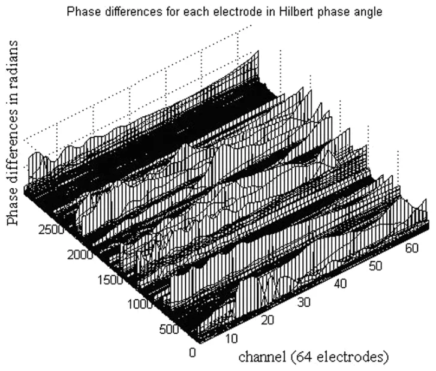
Hình 1 Biểu đồ raster cho thấy các hiệu số liên tiếp của pha giải tích đã mở (unwrapped), thay đổi theo số thứ tự kênh (trục hoành phải) và thời gian (trục hoành trái; 3000 bước thời gian tương ứng với thời lượng 6 giây của thí nghiệm). Hình này được tái dựng từ [47] tương tác xã hội, hệ thống thần kinh và mạng máy tính [48, 49, 50]. Sự lan truyền tín hiệu thần kinh qua các hiệu ứng sợi trục có vận tốc vào khoảng 1–2 m/s, và hỗ trợ sự đồng bộ hóa trên các vùng rộng lớn của vỏ não [39, 43, 51]. Điều này tạo ra các hiệu ứng thế giới nhỏ (small-world) [52, 53] tương tự như sự lan truyền nhanh chóng của thông tin qua các tiếp xúc xã hội. Các mạng “thế giới nhỏ” có thể được tạo ra bởi các quy tắc gắn kết ưu tiên nhất định giữa các đỉnh. Số lượng cạnh liên kết với một nút cũng được gọi là bậc của nó. Quy tắc gắn kết ưu tiên đơn giản phát biểu rằng, trong quá trình tiến hóa của mạng, các nút mới sẽ được kết nối với các nút cũ theo tỷ lệ thuận với bậc của các nút cũ. Kết quả là, một nút có kết nối cao (= một nút có bậc cao) có khả năng nhận được nhiều kết nối hơn nữa. Quy tắc này có thể dẫn đến một cấu trúc trung tâm (hub) đặc biệt, làm cho đường kính mạng nhỏ hơn so với một mạng được tạo ngẫu nhiên thuần túy.
Trong một số mạng nhất định, như www và các hệ thống sinh học, phân phối bậc tuân theo quy luật lũy thừa, tức là nó không có thang đo (scale-free) [54, 55]. Phân phối không thang đo có thể được tạo ra bởi quy tắc gắn kết ưu tiên được chỉ định phù hợp, nhưng cũng bằng nhiều cách khác. Một lý thuyết toán học nhất quán về các mạng không thang đo được đưa ra bởi [56]. Tầm quan trọng của các tương quan khoảng cách xa đã được nhấn mạnh bởi nhiều nhà lý thuyết não bộ [57, 58, 59, 60, 61, 62, 63]. Các chuyển pha được nghiên cứu bởi mô hình thấm thần kinh (neuropercolation) mang lại một góc nhìn mới về hành vi không thang đo trong các mạng thế giới nhỏ liên quan đến các chức năng của não [64, 65].
Các chuyển pha giữa các trạng thái hỗn loạn tạo thành động lực học giải thích cách bộ não thực hiện những kỳ tích đáng kinh ngạc như trừu tượng hóa các yếu tố thiết yếu của hình ảnh từ các nền phức tạp, chưa biết và không thể đoán trước, khái quát hóa trên các ví dụ về các đối tượng lặp lại, gán ghép đáng tin cậy vào các lớp dẫn đến hành động thích hợp, lập kế hoạch hành động tương lai dựa trên kinh nghiệm quá khứ, và cập nhật liên tục thông qua quá trình học tập [28].
Phân tích EEG đã mang lại các mẫu điều biến biên độ (AM) không-thời gian với độ rõ nét chưa từng có [43]. Nó ủng hộ lý thuyết về tính tới hạn tự tổ chức (SOC) trong động lực học thần kinh [66, 67, 68]. SOC chỉ ra rằng bộ não tự duy trì ở rìa của sự mất ổn định toàn cục bằng cách tạo ra vô số điều chỉnh nhỏ và lớn dưới dạng các chuyển pha. Chuyển pha có nghĩa là mỗi điều chỉnh là một sự thay đổi đột ngột và không thể đảo ngược trong trạng thái của một quần thể thần kinh. SOC cung cấp một đồng hồ bên trong liên tục tái khởi tạo các dao động sóng mang beta-gamma, qua đó sự phát xung của vô số tế bào thần kinh vi mô trong não được tổ chức thành các mẫu không-thời gian vĩ mô điều khiển hành vi. Ý nghĩa của mẫu vĩ mô đạt được thông qua hành động có chủ đích của chủ thể, như sẽ được mô tả trong ví dụ về phát triển hệ thống có chủ đích dựa trên mô hình K (Katchalsky).
4 Các Kiến trúc K và Chức năng của Chúng
4.1 Ghi chú Lịch sử
Chúng tôi đề xuất một cách tiếp cận phân cấp đối với động lực học thần kinh không-thời gian, dựa trên các tập K. Các tập K cấp thấp được Freeman giới thiệu vào thập niên 1970, được đặt tên để vinh danh Aharon Kachalsky, một người tiên phong sớm của động lực học thần kinh [22]. Các tập K là các mô hình đa thang đo, mô tả mức độ phức tạp ngày càng tăng của cấu trúc và các hành vi động. Các tập K là các mô hình trung mô, và đại diện cho một cấp độ trung gian giữa các tế bào thần kinh vi mô và các cấu trúc não vĩ mô. Chẳng hạn, tập K0 cơ bản mô tả động lực học của một vi cột vỏ não với khoảng 104 tế bào thần kinh. Các tập K là các đặc tả tô-pô của hệ thống phân cấp kết nối trong các quần thể tế bào thần kinh. Động lực học của tập K được mô hình hóa bằng một hệ phương trình vi phân thường phi tuyến với các tham số phân bố. Động lực học K được biểu thị bằng ODE dự đoán các dạng sóng dao động được tạo ra bởi các quần thể thần kinh. Các tập K mô tả các mẫu không gian về pha và biên độ của các dao động, được tạo ra bởi các thành phần ở mỗi cấp độ. Chúng mô hình hóa các trường hoạt động thần kinh có thể quan sát được bao gồm EEG, LFP và MEG.
Các tập K bao gồm một hệ thống phân cấp các thành phần có độ phức tạp tăng dần, bao gồm các hệ thống K0, KI, KII, KIII, KIV và KV. Chúng mô hình hóa hệ thống phân cấp của bộ não bắt đầu từ quy mô mm đến toàn bộ bán cầu não. Các tập K cấp thấp, lên đến và bao gồm KIII, đã được nghiên cứu chuyên sâu vào giữa thập niên 1990 và chúng mô hình hóa các vỏ não cảm giác. Chúng đã được áp dụng để giải quyết các bài toán phân loại và nhận dạng mẫu khác nhau [69]. Các tập KIII là các hệ thống động lực phức tạp mô hình hóa sự phân loại ở các vùng vỏ não khác nhau, thường có hàng trăm bậc tự do. Trong các ứng dụng ban đầu, các tập KIII biểu hiện độ nhạy cực cao đối với các tham số mô hình, điều này ngăn cản việc sử dụng rộng rãi chúng trong thực tế [70]. Trong thập kỷ qua, phân tích có hệ thống đã xác định được các vùng hiệu suất bền vững [23], và các tính chất ổn định của các tập K đã được suy ra [71, 72]. Ngày nay, các tập K được sử dụng trong một loạt các ứng dụng, bao gồm phát hiện hóa chất [73], phân loại [74, 75], dự đoán chuỗi thời gian [76] và điều hướng robot [6, 77]. Sự phát triển gần đây bao gồm các tập KIV [62] mô hình hóa hành vi có chủ đích. Chúng có thể áp dụng cho điều khiển tự hành [78, 79, 80] và là trọng tâm chính của bài luận này.
4.2 Hệ thống Phân cấp của các Tập K
4.2.1 Tập KO
Tập KO đại diện cho một tập hợp các tế bào thần kinh không tương tác. Nó mô hình hóa sự tích hợp đuôi gai ở các tế bào thần kinh trung bình và một tính phi tuyến tĩnh dạng sigmoid cho sự truyền dẫn sợi trục. Chúng được mô tả bởi một phương trình vi phân thường (ODE) tuyến tính bậc 2 phụ thuộc trạng thái. Tập KO được chi phối bởi một điểm hút với đầu ra bằng không và duy trì ở trạng thái cân bằng trừ khi bị nhiễu loạn. KO mô hình hóa một quần thể tế bào thần kinh khoảng 104 tế bào thần kinh. Phương trình vi phân thường bậc hai mô tả nó được viết như sau:
(ab)d2P(t) dt2 + (a + b)d P(t) dt + P(t) = F(t). (1)
Ở đây a và b là các hằng số thời gian được xác định về mặt sinh học. P(t) biểu thị sự kích hoạt của nút như một hàm theo thời gian. F(t) bao gồm một hàm ánh xạ phi tuyến Q(x) tác động lên tổng có trọng số của sự kích hoạt từ các nút lân cận và bất kỳ đầu vào bên ngoài nào. Hàm sigmoid Q(x) được cho bởi phương trình:
Q(x) = q{1 −exp(− 1 q(ex −1))} (2)
Trong (2), q là tham số xác định độ dốc và tiệm cận cực đại của đường cong. Hàm sigmoid này được mô hình hóa từ thí nghiệm về sự kích hoạt thần kinh sinh học [22]. Động lực sinh học của hàm truyền Q(x), cũng như minh họa của nó được trình bày trong chương của Freeman trong tập sách này.
4.2.2 Tập KI
Một tập KI đại diện cho một tập hợp các tập K0, có thể là các đơn vị kích thích hoặc ức chế. Ở cấp độ KI, điều quan trọng là phải có cùng loại đơn vị trong hệ thống, do đó chúng ta không có phản hồi âm. Theo đó, chúng ta có thể nói về các tập KI kích thích hoặc ức chế, tức là KIE và KII tương ứng. Kết quả là, động lực học của một KI được mô tả bằng một sự hội tụ điểm cố định đơn giản. Nếu KI có mật độ kết nối chức năng đủ lớn, thì nó có khả năng duy trì một trạng thái hoạt động nền khác không bằng sự kích thích (hoặc ức chế) lẫn nhau. KI thường hoạt động cách xa trạng thái cân bằng nhiệt động lực học. Tính ổn định của tập KIE dưới nhiễu loạn xung được chứng minh bằng cách sử dụng các tế bào quanh cầu khứu giác (periglomerular) trong hành khứu giác [81]. Đóng góp quan trọng của nó là mức đầu ra kích thích được duy trì. Tương tác thần kinh thông qua sự kích thích lẫn nhau (hoặc ức chế lẫn nhau) ổn định là nền tảng để hiểu động lực học não bộ.
4.2.3 Tập KII
Một tập KII đại diện cho một tập hợp các tế bào kích thích và ức chế, KIE và KII. KII có bốn loại tương tác: kích thích-kích thích, ức chế-ức chế, kích thích-ức chế và ức chế-kích thích. Dưới sự kích thích kéo dài từ một tập KIE nhưng không có đầu vào cảm giác tương đương, tập KII được chi phối bởi động lực học chu kỳ giới hạn. Với đầu vào cảm giác mô phỏng bao gồm một tham số trật tự, tập KII trải qua một chuyển đổi trạng thái sang dao động ở một dải tần số hẹp trong vùng gamma.
4.2.4 Tập KIII
Mô hình KIII bao gồm một số tập KII được kết nối với nhau, và nó mô hình hóa một hệ thống cảm giác nhất định trong não, ví dụ như khứu giác, thị giác, thính giác, cảm giác thân thể. Người ta đã chứng minh rằng KIII có thể được sử dụng như một bộ nhớ liên kết mã hóa dữ liệu đầu vào thành các dao động không-thời gian không hội tụ [69, 23]. KIII tạo ra các dao động hỗn loạn, không tuần hoàn với phổ 1/f 2. Các bộ nhớ hỗn loạn KIII có một số ưu điểm so với các mạng hồi quy hội tụ: (1) chúng tạo ra các bộ nhớ bền vững dựa trên tương đối ít ví dụ học tập ngay cả trong môi trường nhiễu; (2) khả năng mã hóa của một mạng với một số lượng nút nhất định lớn hơn theo cấp số nhân so với các mạng hội tụ tương ứng; (3) chúng có thể truy hồi dữ liệu đã lưu trữ rất nhanh chóng, giống như cách con người và động vật có thể nhận ra một mẫu đã học chỉ trong tích tắc.
4.2.5 Tập KIV
Một tập KIV được hình thành bởi sự tương tác của 3 tập KIII. Nó được sử dụng để mô hình hóa các tương tác của não trước động vật có xương sống nguyên thủy trong sự hình thành các dạng hành vi có chủ đích đơn giản [82, 62]. Các mô hình KIV cung cấp một nền tảng khả thi về mặt sinh học để nghiên cứu hành vi nhận thức gắn liền với học tập và chu trình hành động-tri giác, và do đó sẽ là trọng tâm của bài tổng quan này. Hình 2 minh họa hệ thống phân cấp của các tập K.
4.3 Các Nguyên lý Cơ bản của Động lực học Thần kinh
Cách tiếp cận dựa trên mô hình K phân cấp được tóm tắt trong 10 “Khối xây dựng” của động lực học thần kinh [22, 29]:
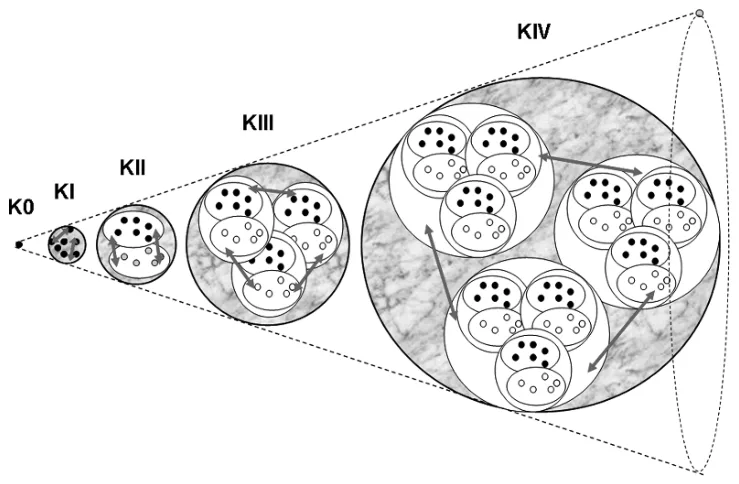
Hình 2 Hệ thống phân cấp tập K cho thấy sự tiến triển của các mô hình quần thể thần kinh từ cấp độ tế bào đến mô phỏng toàn bán cầu não, từ K0 đến KIV. Sự tiến triển của các mô hình có độ phức tạp tăng dần tuân theo các cấp độ tổ chức của bộ não. K0: là một tập hợp các tế bào thần kinh không tương tác được mô tả bởi một ODE tuyến tính phụ thuộc trạng thái cho sự tích hợp đuôi gai và một tính phi tuyến tĩnh dạng sigmoid cho sự truyền dẫn sợi trục. K0 được chi phối bởi một điểm hút với đầu ra bằng không và duy trì ở trạng thái cân bằng trừ khi bị nhiễu loạn. KI tương ứng với một cột vỏ não. Nó đại diện cho một tập hợp các tế bào thần kinh kích thích hoặc ức chế có mật độ kết nối chức năng đủ để duy trì trạng thái hoạt động nền bằng sự kích thích lẫn nhau hoặc ức chế lẫn nhau. KII đại diện cho một tập hợp các quần thể kích thích và ức chế, có các kết nối phản hồi dương và âm. KII có thể biểu hiện các dao động tuần hoàn chu kỳ giới hạn ở một dải tần số hẹp trong vùng gamma. KIII được hình thành bởi sự tương tác của nhiều tập KII thông qua các con đường sợi trục dài với độ trễ phân bố. Nó mô phỏng động lực học đã biết của các vùng cảm giác tạo ra các dao động hỗn loạn, không tuần hoàn với phổ 1/f 2. KIV được hình thành bởi sự tương tác của 3 tập KIII. Nó mô hình hóa bán cầu não với nhiều vùng cảm giác và sự hình thành các dạng hành vi có chủ đích đơn giản [82]
1. Điểm hút khác không được tạo ra bởi sự chuyển đổi trạng thái của một quần thể kích thích bắt đầu từ một điểm hút có hoạt động bằng không. Đây là chức năng của tập KI. 2. Sự nổi lên của dao động tắt dần thông qua phản hồi âm giữa các quần thể thần kinh kích thích và ức chế. Đây là đặc điểm kiểm soát dải tần số sóng mang beta-gamma và nó đạt được nhờ KII có độ lợi phản hồi thấp. 3. Chuyển đổi trạng thái từ điểm hút sang điểm hút chu kỳ giới hạn điều tiết dao động trạng thái dừng của một quần thể vỏ não hỗn hợp E-I KII. Nó đạt được nhờ KII có độ lợi phản hồi đủ cao. 4. Sự hình thành các dao động không tuần hoàn/hỗn loạn phổ rộng như hoạt động nền bởi phản hồi âm và dương kết hợp giữa nhiều quần thể KII; đạt được bằng cách ghép nối các bộ dao động KII với các tần số không thông ước.
5. Sóng phân bố của hoạt động đuôi gai hỗn loạn mang một mẫu không gian của điều biến biên độ AM trong KIII. 6. Sự gia tăng độ lợi phản hồi phi tuyến được thúc đẩy bởi đầu vào vào một quần thể hỗn hợp, dẫn đến sự mất ổn định của hoạt động nền và dẫn đến sự nổi lên của một mẫu AM trong KIII như bước đầu tiên trong tri giác. 7. Sự hiện thân của ý nghĩa trong các mẫu AM của hoạt động thần kinh được định hình bởi các tương tác khớp thần kinh đã được biến đổi thông qua học tập trong các lớp KIII. 8. Sự suy giảm nhiễu vi mô do cảm giác thúc đẩy và sự tăng cường các mẫu AM vĩ mô mang ý nghĩa bởi các phép chiếu vỏ não phân kỳ-hội tụ trong KIV. 9. Sự hình thành Gestalt và tiền hướng tâm (preafference) trong KIV thông qua sự hội tụ của các tín hiệu cảm giác bên ngoài và bên trong dẫn đến sự kích hoạt các cảnh quan điểm hút dẫn tới hành động có chủ đích. 10. Sự tích hợp toàn cục của các khung ở tốc độ theta thông qua các chuyển pha vỏ não mới đại diện cho hoạt động nhận thức cấp cao trong mô hình KV.
Các nguyên lý từ 1 đến 7 đã được triển khai trong các mô hình KIII và được áp dụng thành công trong nhiều chức năng nhận dạng và nhận diện mẫu khác nhau. Chúng đóng vai trò là các bước cơ bản để tạo điều kiện cho nhận thức bậc cao. Các nguyên lý 8 và 9 phản ánh sự tạo ra tính có chủ đích cơ bản bằng các tập KIV, vốn là mục tiêu của bài tổng quan hiện tại. Nguyên lý 10 thể hiện con đường dẫn tới tính có chủ đích cấp cao và cuối cùng là ý thức, điều không được đề cập ở hiện tại.
5 Xây dựng các Hệ thống Động lực Có chủ đích ở Cấp độ KIV
5.1 Các Khía cạnh của Tính có chủ đích
Các đặc điểm chính của tính có chủ đích như biểu hiện của hành vi thông minh cấp cao ở người và động vật có thể được tóm tắt như sau. Trí tuệ được đặc trưng bởi sự theo đuổi linh hoạt và sáng tạo các mục tiêu được xác định từ bên trong. Con người và động vật không phải là những kẻ tiếp nhận thụ động thông tin tri giác mà chủ động tìm kiếm đầu vào cảm giác. Trong quá trình đó, chúng hoàn thành chuỗi sau đây [83]:
• Hình thành các giả thuyết về các trạng thái kỳ vọng mà cá thể có thể đối mặt trong tương lai; • Diễn đạt các giả thuyết thành các mục tiêu có ý nghĩa cần hướng tới; • Xây dựng kế hoạch hành động để đạt được các mục tiêu; • Thông báo cho bộ máy cảm giác và tri giác về đầu vào dự kiến trong tương lai, một quá trình gọi là tái hướng tâm (re-afference); • Hành động vào môi trường phù hợp với hành động để đạt được các mục tiêu đã đề ra; • Thao tác các cảm biến, điều chỉnh các thuộc tính và hướng của chúng để tiếp nhận dữ liệu cảm giác;
• Khái quát hóa và phân loại dữ liệu cảm giác và kết hợp chúng thành các tri giác đa cảm giác gọi là Gestalt; • Xác minh và kiểm tra các giả thuyết, đồng thời cập nhật và học hỏi mô hình não bộ để tương ứng tốt hơn với dữ liệu tri giác được. • Hình thành các giả thuyết mới/cập nhật và tiếp tục toàn bộ quá trình một lần nữa.
Hoạt động tuần hoàn của dự đoán, kiểm tra bằng hành động, cảm nhận, tri giác và đồng hóa được gọi là tính có chủ đích. Tầm quan trọng của cách tiếp cận động lực học đối với trí tuệ được nhấn mạnh bởi giả thuyết của chúng tôi rằng động lực học phi tuyến là một thành phần chính của hành vi có chủ đích trong các hệ thống sinh học [84]. Do đó, hiểu biết động lực học của nhận thức và sự liên quan của nó đến tính có chủ đích là một bước đi thiết yếu hướng tới việc xây dựng các cỗ máy thông minh hơn [85]. Cụ thể, động lực học không hội tụ liên tục tạo ra thông tin mới như một nguồn giải pháp mới cho các vấn đề phức tạp. Giả thuyết động lực học được đề xuất về tính có chủ đích và trí tuệ vượt ra ngoài khái niệm cơ bản về hành vi hướng mục tiêu, hoặc các thao tác tinh vi với các biểu diễn ký hiệu để đạt được các mục tiêu cho trước. Tính có chủ đích bắt nguồn từ bên trong tác tử và không thể được cấy vào nó từ bên ngoài bởi bất kỳ tác nhân bên ngoài nào. Tính có chủ đích được biểu hiện và tiến hóa thông qua sự thay đổi động lực học trong trạng thái của tác tử khi nó tương tác với môi trường.
5.2 Thiết kế Hệ thống KIV Có chủ đích
Trong phần này, chúng tôi mô tả cấu trúc và hoạt động của mô hình KIV có chủ đích dựa trên [62, 82]. KIV có 4 thành phần chính. Ba trong số các thành phần là các tập KIII như đã nêu trong phần trước, tức là vỏ não, thể hồi hải mã và não trước đường giữa. Chúng được kết nối thông qua hoạt động điều phối của hạch hạnh nhân với thân não (BS) và phần còn lại của hệ viền. Hình 3 minh họa các kết nối giữa các thành phần của KIV. Các kết nối được hiển thị là hai chiều, nhưng chúng không đối xứng qua lại. Đầu ra của một nút trong tập KII được hướng đến các nút trong tập KII khác, nhưng nó không nhận đầu ra từ chính các nút đó mà từ các nút khác trong cùng tập KII. Trong Hình 3 có thể phân biệt ba loại tín hiệu cảm giác. Mỗi tín hiệu cảm giác này cung cấp kích thích cho một phần nhất định của não, lần lượt là các vỏ não cảm giác, não trước đường giữa (MF) và thể hồi hải mã (HF). Các loại tín hiệu cảm giác tương ứng được liệt kê dưới đây:
• Thụ thể ngoại cảm (Exteroceptors); • Thụ thể nội cảm (Interoceptors, bao gồm cả cảm giác bản thể); • Tín hiệu định hướng.
Thông tin cảm giác từ môi trường đi vào qua các thụ thể ngoại cảm băng rộng (thị giác, thính giác, cảm giác thân thể, v.v.) và được xử lý trong OB và PC dưới dạng một chuỗi các mẫu AM phân bố trong không gian. Các mẫu AM này
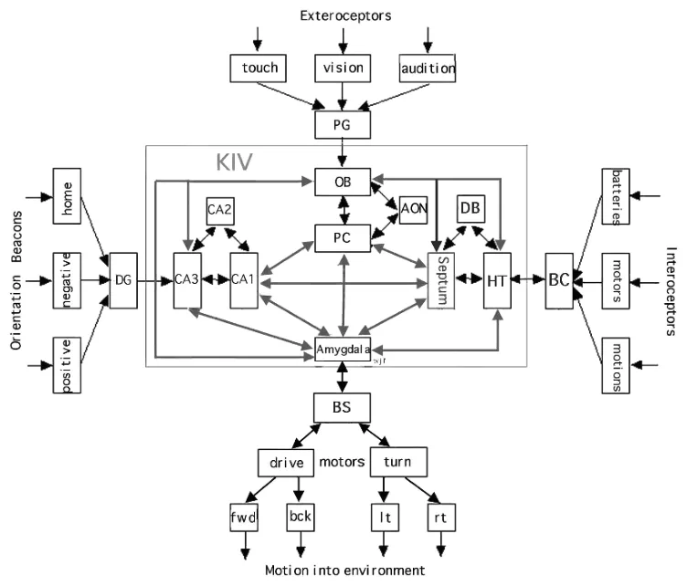
Hình 3 Mô hình KIV của bộ não, bao gồm ba tập KIII (vỏ não, thể hồi hải mã và não trước đường giữa), thể vân hạch hạnh nhân và BS, thân não. Hạch hạnh nhân là một tập KII, trong khi thân não và các động lực là thông thường. Các kết nối dài thưa thớt tạo nên tập KIV được hiển thị bằng màu xanh lam. Chúng được hiển thị là hai chiều, nhưng không đối xứng qua lại. Vị trí hội tụ và đầu ra được cung cấp bởi hạch hạnh nhân, bao gồm các phần nhân vỏ-giữa và đáy-bên của nó. Trong mô hình đơn giản hóa không có hệ thần kinh tự chủ này, hạch hạnh nhân cung cấp định hướng hướng mục tiêu cho hệ thống vận động, được chồng lên các phản xạ xúc giác cục bộ và các phản xạ bảo vệ khác [82] được chồng lên các bản đồ không gian trong CA3 vốn được suy ra từ các đèn hiệu định hướng. Trong mô hình hiện tại, các mảng thụ thể riêng biệt được sử dụng để đơn giản hóa việc chuyên môn hóa thụ thể và kết nối bên trong. Hệ thống KIII vỏ não khởi phát chức năng nhận dạng mẫu bằng tác nhân gây mất ổn định do đầu vào cảm giác đối với động lực học đa chiều. Đầu vào được kiểm soát cổng bởi bộ phát vách (như một cái hít hơi hoặc chuyển động giật mắt). Điều này hiện thực hóa một cảnh quan điểm hút được hình thành bởi kinh nghiệm trước đó trong OB/PC, vốn trong mô hình của chúng tôi là vùng cảm giác chung. Ngược lại, hệ thống KIII hồi hải mã sử dụng sự phân loại hiện thân trong các đầu ra của OB và PC làm đầu vào chứa nội dung của nó, mà DG đóng góp vào đó vị trí thời gian và không gian của các sự kiện môi trường. Những sự kiện này đã đóng góp vào các mối quan hệ được học trước đó giữa các kỳ vọng và kinh nghiệm của hệ thống trong quá trình tìm kiếm mục tiêu được giao.
Một thành phần của hệ thống KIV tích hợp, thể não trước đường giữa, nhận các tín hiệu thụ thể nội cảm thông qua hạch nền, và xử lý chúng trong vùng dưới đồi và vách ngăn. MF cung cấp hệ thống giá trị của KIV, sử dụng thông tin về các mục tiêu bên trong và các điều kiện trong động vật. Nó cung cấp luồng “Tại sao?” cho hạch hạnh nhân, nơi kết hợp thông tin này với thông tin “Cái gì?” và “Ở đâu?” đến từ vỏ não và hồi hải mã để đưa ra quyết định về bước/hành động tiếp theo cần thực hiện. MF cũng là một đơn vị KIII, góp phần vào việc hình thành trạng thái kết hợp KIV toàn cục. Trạng thái KIV kết hợp tiến hóa qua một chuỗi các mẫu AM siêu ổn định, điều cũng được mô tả như nguyên lý điện ảnh [43] trong hoạt động của bộ não.
5.3 Học tập trong các Mô hình KIV
Để sử dụng các mảng tập K như những thiết bị tính toán và bộ nhớ mới lạ, chúng ta cần nghiên cứu ảnh hưởng của việc học tập đối với động lực học hệ thống. Đặc biệt, chúng ta cần mô tả vai trò của học tập và sự thích nghi đối với các chuyển pha. Hoạt động của bộ nhớ động có thể được mô tả như sau. Khi không có kích thích, hệ thống ở trạng thái đa chiều của hoạt động cơ bản kết hợp trong không gian. Trạng thái cơ bản được mô tả bởi một điểm hút toàn cục không tuần hoàn (hỗn loạn). Để đáp ứng với một kích thích bên ngoài, hệ thống bị đẩy ra khỏi trạng thái cơ bản vào một lưu vực bộ nhớ cục bộ của một cánh điểm hút. Cánh này được suy luận là có số chiều thấp hơn điểm hút cơ bản, tạo ra sự điều biến biên độ (AM) có mẫu không gian của sóng mang kết hợp. Hệ thống cư trú trong cánh cục bộ này xấp xỉ trong khoảng thời gian của kích thích và trở về trạng thái cơ bản sau khi kích thích kết thúc. Quá trình bùng phát theo thời gian này có thời lượng khoảng 200 ms. Bộ nhớ hệ thống được định nghĩa là tập hợp các lưu vực và cánh điểm hút, và sự truy hồi là sự cảm ứng bởi một chuyển đổi trạng thái của một dao động gamma không-thời gian với một mẫu AM không gian. Ba quá trình học tập được định nghĩa [23]:
• Học tập củng cố Hebbian đối với các mẫu kích thích; quá trình này nhanh và không thể đảo ngược; • Quen nhờn (habituation) đối với hoạt động nền; chậm, tích lũy và có thể đảo ngược; • Chuẩn hóa các hoạt động nút để duy trì sự ổn định tổng thể; tối ưu hóa tầm rất xa ngoài thời gian thực.
Các quá trình học tập khác nhau tồn tại trong một sự cân bằng tinh tế và tầm quan trọng tương đối của chúng thay đổi ở các giai đoạn khác nhau của quá trình ghi nhớ. Trong khuôn khổ của nghiên cứu này, hoạt động ổn định của mạng được nghiên cứu mà không sử dụng chuẩn hóa. Quen nhờn là một quá trình tự động ở mọi vùng cảm giác sơ cấp nhằm sàng lọc các kích thích không liên quan, gây nhầm lẫn, mơ hồ hoặc không mong muốn. Nó cấu thành một bộ lọc thích nghi để giảm tác động của nhiễu môi trường liên tục và không mang thông tin. Nó được cập nhật liên tục dưới một hình thức học tập, và có thể bị hủy bỏ đột ngột (“giải quen nhờn”) bởi các kích thích mới lạ và hầu như được tái thiết lập nhanh chóng tương đương (“tái quen nhờn”) nếu các kích thích mới lạ không được củng cố. Đây là một quá trình trung tâm không xảy ra ở cấp độ thụ thể cảm giác. Ở đây nó được mô hình hóa bằng sự suy giảm trọng số gia tăng làm giảm độ nhạy của hệ thống KIII đối với các kích thích từ môi trường không được chỉ định là mong muốn hoặc có ý nghĩa bởi sự củng cố đi kèm. Người ta kỳ vọng rằng hiệu ứng học tập sẽ góp phần vào việc hình thành các lưu vực điểm hút uốn lượn, tạo điều kiện thuận lợi cho các chuyển pha trong mô hình động lực học ở rìa của hoạt động hỗn loạn.
Quá trình học diễn ra trong các đơn vị CA1 và CC của hồi hải mã và vỏ não tương ứng. Chúng ta có hai loại học tập: học tập tương quan Hebbian và quen nhờn. Học tập Hebbian được ghép cặp với sự củng cố, phần thưởng hoặc hình phạt; tức là việc học chỉ diễn ra nếu tín hiệu củng cố hiện diện. Quá trình này mang tính từng đợt, không liên tục, dài hạn và không thể đảo ngược. Ngược lại, quen nhờn dẫn đến sự suy giảm liên tục phản ứng của một tế bào tỷ lệ thuận với hoạt động của nó, trừ khi được củng cố bởi các hiệu ứng trí nhớ dài hạn. Lưu ý rằng các tập KII bao gồm các lớp kích thích và ức chế tương tác với nhau, và các trọng số ngang giữa các nút trong các lớp kích thích được điều chỉnh bởi các hiệu ứng học tập; xem Hình 4 để biết minh họa.
5.4 Mô phỏng Hoạt động của Mô hình KIV
Các thí nghiệm đã được thiết kế và triển khai trong mô phỏng máy tính để chứng minh tiềm năng của KIV hoạt động dựa trên các nguyên lý động lực học có chủ đích. Trong các
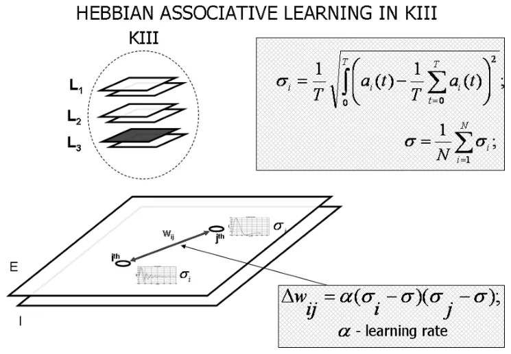
Hình 4 Minh họa quá trình học tập tương quan Hebbian tại lớp kích thích dưới cùng của tập KIII. Do bản chất không hội tụ của động lực học các tập K điển hình, sai số trung bình σi được tính cho mỗi kênh trong một cửa sổ thời gian T; T thường là 50 đến 100 ms trong các thí nghiệm; dựa trên [76] thí nghiệm, chúng tôi đã sử dụng một tác tử tự hành di chuyển trong môi trường 2 chiều. Trong quá trình di chuyển, tác tử liên tục nhận được hai loại dữ liệu cảm giác: (1) khoảng cách đến chướng ngại vật; (2) và hướng tới một vị trí mục tiêu được cài đặt sẵn nào đó. KIV đưa ra quyết định về các hành động của mình hướng tới mục tiêu. Cơ chế điều khiển cảm giác của hệ thống là một tập KIV đơn giản bao gồm 2 tập KIII [79, 86, 87].
Tập KIV được áp dụng được minh họa trong Hình 5, có 3 tập KIII: hai KIII cho các vỏ não cảm giác và một KIII cho hồi hải mã. Trong thí nghiệm, chỉ có một vỏ não cảm giác được sử dụng, thực hiện các chức năng của vỏ não thị giác. Đầu vào định hướng và cảm giác thị giác được xử lý lần lượt trong mô hình hồi hải mã và vỏ não. Mỗi ô trong Hình 5 đại diện cho một tập KI hoặc KII. Để thống nhất, chúng tôi sử dụng thuật ngữ khứu giác trong vỏ não cho mọi phương thức cảm giác, phù hợp với động cơ ban đầu của Freeman về KIII như mô hình của hệ thống khứu giác. Mô hình KIV đầy đủ có các thụ thể nội cảm, hướng đến trạng thái bên trong. Trong cách tiếp cận đơn giản hóa thể hiện trong Hình 5, chúng tôi không kết hợp các thụ thể nội cảm.
Động lực học không-thời gian của hệ thống này cho thấy những thay đổi đột ngột trong hoạt động vỏ não mô phỏng, phù hợp với các đặc tính của các mẫu AM siêu ổn định quan sát được trong dữ liệu EEG. Một ví dụ về độ lệch pha giải tích được tính toán được hiển thị trên Hình 6, trong khoảng thời gian mô phỏng 4 giây và một mảng nội khứu (entorhinal) gồm 80 nút. Sự mất đồng bộ gián đoạn được thấy rõ ở tốc độ vài lần mỗi giây. Những kết quả này chỉ ra rằng mô hình KIV thực sự là một
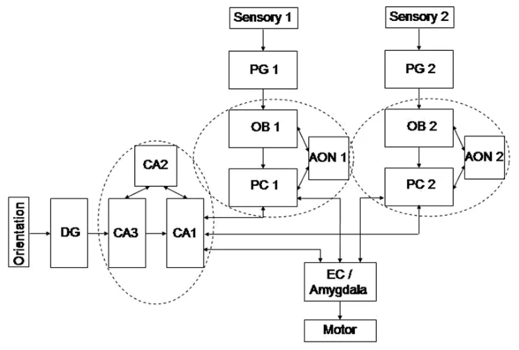
Hình 5 Sơ đồ của mô hình KIV về thể vỏ não-hồi hải mã với các phép chiếu dưới vỏ cho các hành động vận động. KIV bao gồm các tập KIII cho thể hồi hải mã, 2 vỏ não cảm giác, liên kết đến hệ thống vận động được điều phối bởi vỏ não nội khứu chịu ảnh hưởng của thể vân hạch hạnh nhân. Ký hiệu: PG - quanh cầu khứu giác; OB - hành khứu giác; AON - nhân khứu giác trước; PC - vỏ não tiền lê; HF - thể hồi hải mã; DG - hồi răng; CA1, CA2, CA3 - các phân khu của hồi hải mã. Các vòng tròn nét đứt biểu thị các đơn vị KIII cơ bản
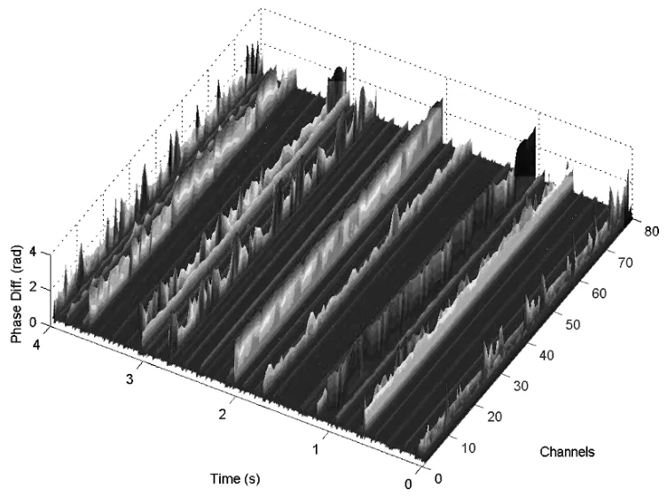
Hình 6 Minh họa các mô phỏng với mô hình bộ nhớ động tập K của bán cầu não; độ lệch pha trong vỏ não nội khứu theo thời gian và không gian. Sự mất đồng bộ gián đoạn đối với phần lớn của mảng được thấy rõ ràng [87] mức độ trừu tượng phù hợp để nắm bắt các thuộc tính thiết yếu của các chuyển pha vỏ não như được chứng minh trong dữ liệu EEG và MEG nội sọ và trên da đầu.
Sự đồng bộ hóa quy mô lớn trong vỏ não, bị ngắt quãng gián đoạn bởi các khoảng thời gian mất đồng bộ ngắn thông qua các chuyển pha, là một thuộc tính nổi lên của vỏ não như một cơ quan thống nhất. Chu trình đồng bộ hóa - mất đồng bộ hóa gián đoạn là một tương quan sinh lý thần kinh của tính có chủ đích và ý thức. Mô hình KIV có khả năng chứng minh động lực học có chủ đích này. KIV là một ứng cử viên để triển khai tính có chủ đích trong các hệ thống nhân tạo.
Các nghiên cứu chuyên sâu đang được tiến hành hướng tới việc giải thích nội dung của các mẫu AM siêu ổn định giữa các hành động chuyển pha, như những khối xây dựng của hành động có chủ đích. Logic động là một công cụ mô hình hóa quan trọng [12] đã được sử dụng để nhận dạng hệ thống trong dữ liệu rất nhiễu với mức độ lộn xộn cao. Logic động, khi được áp dụng để phân tích dữ liệu EEG đa kênh, có thể cung cấp ước lượng tối ưu về các mẫu AM được mô hình hóa thông qua sự nổi lên của nhiều nón pha (phase cones) [88]. Việc mô hình hóa được thực hiện trong bối cảnh mức độ tri thức nhất định hiện có về hành vi của hệ thống tự hành và sự tương tác của nó với môi trường. Bắt đầu với một mô hình ban đầu mơ hồ, mô tả được cải thiện lặp đi lặp lại, dẫn đến các mô hình ngày càng chính xác hơn. Cuối cùng, một trạng thái mô hình đạt được mang lại sự nhận dạng tốt nhất có thể cho bài toán. Lý thuyết logic động cho thấy rằng những cải tiến lặp đi lặp lại như vậy chỉ đòi hỏi một số lượng nhỏ các lần lặp, sử dụng một chuỗi các mô hình phân cấp tiến hóa từ mơ hồ đến chính xác. Việc tích hợp logic động lực học và phương pháp luận tập K có tiềm năng mang lại bước đột phá trong việc xác định ý nghĩa nhận thức của các mẫu AM siêu ổn định, tiến tới việc xác định ngôn ngữ của bộ não.
6 Động lực học Có chủ đích cho Điều khiển Robot
6.1 Các Cách tiếp cận Lấy cảm hứng Sinh học đối với Điều hướng và Điều khiển
Các kiến trúc thần kinh lấy cảm hứng sinh học được sử dụng rộng rãi để điều khiển robot di động và đã chứng minh khả năng điều hướng bền vững trong các kịch bản thực tế đầy thách thức. Các cách tiếp cận này bao gồm các phương pháp bao hàm (subsumption) [89], BISMARC - Hệ thống Lấy cảm hứng Sinh học cho Điều khiển Xe tự hành Dựa trên Bản đồ [90, 91], các tổ chức hành vi phân cấp lấy cảm hứng từ tập tính học [92], thuật toán điều khiển dựa trên hành vi sử dụng logic mờ [93]. Các kiến trúc giống não và mô hình hóa hoạt động não là một lĩnh vực ngày càng phổ biến của điều khiển thông minh, bao gồm việc học bản đồ nhận thức trong hồi hải mã [94, 95], vai trò của tế bào vị trí trong điều hướng [96], lập bản đồ thị giác và hồi hải mã [97, 98, 99], học tập trong hệ thống vỏ não-hồi hải mã [86]. Do mức độ chi tiết cao trong việc tái tạo các phần của não tham gia vào điều hướng, phân tích hành vi bao gồm các nhiệm vụ điều hướng đơn giản.
Cách tiếp cận sử dụng các tập K làm bộ nhớ động lực học được thúc đẩy bởi các phát hiện thực nghiệm liên quan đến các mẫu hoạt động của quần thể tế bào thần kinh. Không giống như các mô hình khác, các mô hình K dựa trên các phát hiện thực nghiệm liên quan đến động lực học trung mô của hoạt động não. Mô hình điều hướng bao gồm hoạt động của hồi hải mã và vỏ não. Như trong các cách tiếp cận khác, người ta giả định rằng hồi hải mã xử lý thông tin liên quan đến các mốc toàn cục, và vỏ não xử lý thông tin nhận được từ vùng lân cận của tác tử. Một sự khác biệt quan trọng giữa mô hình K và các kiến trúc điều khiển lấy cảm hứng sinh học khác là cách thức thông tin được xử lý. Các mô hình K mã hóa thông tin trong các mẫu AM của các dao động được tạo ra bởi các khớp thần kinh Hebbian trong các lớp của các hệ thống con KIII, trong khi các mô hình khác sử dụng tốc độ phát xung và các khớp thần kinh Hebbian [95, 100]. Một khía cạnh quan trọng khác của các mô hình là quy trình học tập được sử dụng để tìm kiếm mục tiêu. Bất chấp những khác biệt này, hiệu suất của mô hình K ngang bằng hoặc vượt trội hơn so với các cách tiếp cận tiêu chuẩn [77, 86].
6.2 Bệ thử nghiệm Robot SRR2K
Chúng tôi chứng minh hoạt động của hệ thống KIV cho việc xử lý trực tuyến các đầu vào cảm giác và giao nhiệm vụ hành vi động trên bo mạch bằng nền tảng SRR2K (Sample Return Rover) tại cơ sở trong nhà của Phòng thí nghiệm Robotics Hành tinh thuộc JPL. Các thí nghiệm minh họa khả năng tránh chướng ngại vật bền vững kết hợp với điều hướng hướng mục tiêu của robot SRR2K. Mô tả chi tiết về các thí nghiệm được đưa ra trong [80]. Các thí nghiệm được tiến hành tại cơ sở trong nhà của Nhóm Robotics Hành tinh, JPL.
Nó bao gồm một khu vực thử nghiệm có hình dạng không đều rộng khoảng 5×5m được bao phủ bởi cát và đá mô phỏng môi trường thám hiểm tự nhiên. Bố cục địa hình thay đổi từ bề mặt nhẵn dễ tiến tới đến địa hình gồ ghề với nhiều đồi và dốc khác nhau đặt ra nhiều thách thức hơn cho SRR2K khi đi qua đó. Điều kiện ánh sáng có thể điều chỉnh theo nhu cầu.
SRR2K là một robot di động bốn bánh với các bánh xe được lái độc lập và các khớp vai của cánh tay robot được điều khiển độc lập; xem Hình 7. Khối lượng của nó là 7 kg, và công suất sử dụng tối đa khi di chuyển nhanh (30–50cm/s) là khoảng 35 W chỉ có thể duy trì trong khoảng 6 giờ mà không cần sạc lại pin. Trong môi trường thí nghiệm nhỏ của nghiên cứu này, không có quãng đường lớn nào được di chuyển, vì vậy dung lượng pin không phải là một hạn chế thực tế đối với chúng tôi.
Các phương thức cảm biến chính trên SRR2K bao gồm: (1) một cặp camera lập thể cách nhau 5 cm, cao 15 cm và trường nhìn 130 độ (Hazcam); (2) một camera mục tiêu gắn trên cánh tay thao tác có trường nhìn 20 độ (Viewcam); (3) con quay hồi chuyển DMU bên trong ghi nhận theo các tọa độ chúc (pitch), nghiêng (roll) và lệch (yaw); (4) gia tốc kế Crossbow theo các tọa độ x, y và z; (5) một cảm biến Mặt trời để cung cấp thông tin định vị toàn cầu [91]. Để đơn giản hóa các điều kiện đo lường và thu thập dữ liệu, camera mục tiêu gắn trên đỉnh, cánh tay robot và cảm biến định vị toàn cầu không được sử dụng trong các thí nghiệm hiện tại. Công trình này chỉ dựa trên các phép đo từ camera lập thể và đơn vị DMU. Cách tiếp cận này giúp đơn giản hóa nhu cầu hỗ trợ kỹ thuật và giám sát tín hiệu, nhưng nó cũng đặt ra một nhiệm vụ thách thức hơn để hoàn thành mục tiêu một cách hiệu quả và đáng tin cậy.
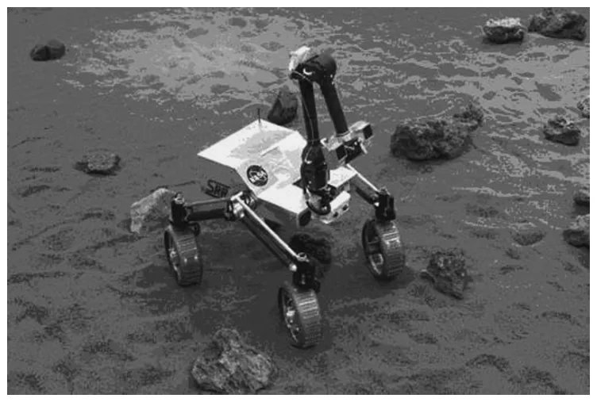
Hình 7 Xe tự hành Thu hồi Mẫu (SRR2K) đặt tại cơ sở trong nhà của Phòng thí nghiệm Robotics Hành tinh mô phỏng địa hình tự nhiên trong môi trường hành tinh. SRR2K có 4 bánh xe có thể điều khiển độc lập. Hình cũng cho thấy một cánh tay robot không được sử dụng trong các thí nghiệm hiện tại. Hệ thống cảm giác bao gồm camera thị giác, cảm biến hồng ngoại, gia tốc kế và cảm biến định hướng toàn cầu [80]
Ở những khoảng thời gian đều đặn, các vectơ cảm giác được ghi lên máy tính trên bo mạch trong một tệp, được hệ thống KIV truy cập để xử lý thêm. Việc cập nhật các mảng dữ liệu cảm giác diễn ra khoảng mỗi 30–40 giây, được xác định bởi tốc độ của SRR2K và thời gian tính toán để tính đầu ra KIV. Chúng tôi có các dữ liệu cảm giác sau: (1) vectơ dữ liệu thị giác bao gồm 10 hệ số wavelet được xác định từ hình ảnh 480×640 pixel được ghi lại của một Hazcam; (2) các bản ghi IMU sử dụng giá trị trung bình và phương sai của các số đọc con quay hồi chuyển và gia tốc kế dọc theo 3 tọa độ không gian. Các mô-men thống kê được xác định trên cửa sổ ghi dữ liệu được cho bởi tốc độ làm mới tệp như mô tả ở trên; (3) hướng đi của xe tự hành, là một giá trị góc đơn lẻ được xác định bằng cách so sánh hướng của xe tự hành với hướng của mục tiêu.
6.3 Kiến trúc Điều khiển KIV
Chúng tôi áp dụng tập KIV để điều hướng robot. KIV là bộ não của một robot có chủ đích, hành động vào môi trường của nó bằng cách khám phá và học hỏi từ các hệ quả cảm giác của hành động đó. KIV hoạt động trên nguyên lý mã hóa trong các dao động không-thời gian, tương tự như các dao động EEG trong não động vật có xương sống. Bằng cách học tập tích lũy, KIV tạo ra một mô hình nội tại về môi trường của nó, mà nó sử dụng để định hướng các hành động của mình trong khi tránh các mối nguy hiểm và đạt tới các mục tiêu do người điều khiển xác định. Chúng tôi đặt ra nhiệm vụ đơn giản là bắt đầu từ một góc và đi đến vị trí mục tiêu GOAL_XY được chỉ định khi bắt đầu thí nghiệm. Con đường thẳng có thể không phải là tốt nhất khi có một số khu vực gồ ghề khó băng qua, hoặc một số ngọn đồi khó leo, v.v. Trong tình huống này, chúng tôi kỳ vọng rằng một robot SRR2K được huấn luyện đúng cách sẽ quyết định đi theo một con đường tránh các khu vực khó khăn, hoặc ít nhất là cố gắng làm như vậy. Nếu việc học và khái quát hóa đúng cách đã diễn ra, người ta có thể thay đổi địa hình thành một bố cục mà SRR2K chưa từng thấy trước đây, nó vẫn sẽ đạt được hiệu suất tốt.
Điều quan trọng cần lưu ý là hệ thống điều khiển dựa trên KIV nhìn chung sẽ không đưa ra một quyết định tối ưu tuyệt đối. Hoặc ít nhất điều này là không có khả năng xảy ra. Thay vào đó, nó có thể chọn một con đường cận tối ưu. Nhưng nhìn chung, điều này sẽ bền vững hơn so với một con đường tối ưu được thiết kế bởi một phương pháp dựa trên quy tắc. Xe tự hành ở một trạng thái nhất định tại bất kỳ thời điểm hoạt động nào, và nó chuyển sang trạng thái tiếp theo dựa trên trạng thái hiện tại và thông tin đầu vào sẵn có. Thuật toán điều khiển CRUISE_XY_Z nhận 2 biến được điều khiển
ANGLE_TO_TURN và DISTANCE_TO_GO. Các biến này được KIV cung cấp thông qua một tệp điều khiển được tải xuống SRR2K thường xuyên. Một biến thứ ba
DESIRED_VELOCITY cũng có thể được điều khiển. Tuy nhiên, trong nhiệm vụ hạn chế cho dự án hiện tại, vận tốc được gán một giá trị là 10 cm/s và không thay đổi để đơn giản.
Mô hình KIV hoàn chỉnh bao gồm bốn thành phần chính, cụ thể là 3 tập KIII để xử lý cảm giác, và một KII để tích hợp, như đã được mô tả trước đây; xem Hình 3. Trong mô hình đầy đủ, một tập KIII mô hình hóa hồi hải mã, một tập khác mô hình hóa vùng vỏ não, và tập thứ ba mô tả não trước đường giữa. Thành phần chính thứ tư là vỏ não nội khứu (EC) cùng với hạch hạnh nhân, vốn là một tập KII.
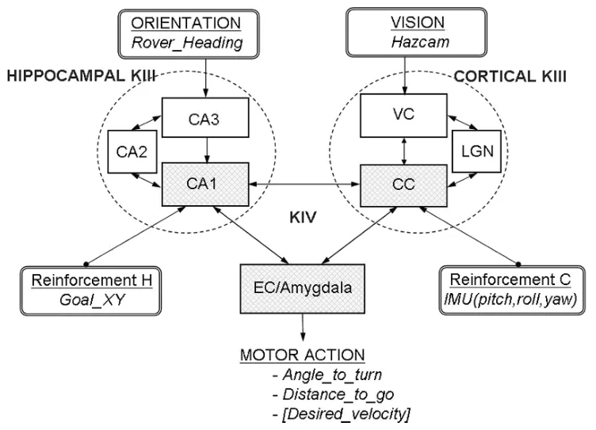
Hình 8 Sơ đồ của mô hình KIV đơn giản hóa được sử dụng trong các thí nghiệm điều khiển SRR2K. Ký hiệu của các đơn vị KII: CA1, CA2 và CA3 là các phân khu hồi hải mã; VC và CC lần lượt là vỏ não thị giác và vỏ não đại não, LGN là thể gối bên; EC - vỏ não nội khứu cùng với hạch hạnh nhân. Đặc tả về các tín hiệu cảm giác định hướng và thị giác, cùng các tín hiệu củng cố hồi hải mã và vỏ não được trình bày trong văn bản. Các ô tô bóng chỉ ra các vị trí nơi diễn ra quá trình học (CA1 và CC) và truy hồi (EC/Hạch hạnh nhân)
EC tích hợp các ảnh hưởng từ tất cả các phần của bán cầu não, và nó cung cấp liên kết đến các phần bên ngoài của hệ viền cho hành động vận động. Trong công trình hiện tại, một KIV đơn giản hóa được sử dụng, có một tập KIII cảm giác thị giác, một tập KIII hồi hải mã. Để đơn giản, chúng tôi chỉ có một tín hiệu củng cố đại diện cho đơn vị thụ thể nội cảm thay vì một mô hình não trước đường giữa KIII đầy đủ. Theo đó, EC tích hợp các tác động của các đơn vị KIII vỏ não và hồi hải mã. Tập KIV được áp dụng được mô tả trong Hình 8.
6.4 Học tập và Điều khiển Robot Di động SRR2K với Bộ não KIV Có chủ đích
Robot được dẫn đường bởi KIV sử dụng kinh nghiệm của mình để liên tục giải quyết các vấn đề về tri giác và điều hướng do môi trường áp đặt khi nó tự hành theo đuổi các mục tiêu do người huấn luyện lựa chọn. Có ba giai đoạn trong hoạt động điều khiển KIV: (i) giai đoạn học tập; (ii) giai đoạn gán nhãn; và (iii) giai đoạn thử nghiệm. Để biết chi tiết xem [78].
• Ở giai đoạn học tập, SRR2K khám phá môi trường và xây dựng các liên kết giữa các phương thức cảm giác thị giác, DMU và định hướng. Nếu nó thực hiện một bước đi tốt trong quá trình khám phá ngẫu nhiên, nó nhận được một tín hiệu củng cố dương và một chu trình học tập Hebbian được hoàn thành. Các tín hiệu củng cố được cung cấp bởi các giá trị DMU trong trường hợp kênh thị giác, và bởi cảm biến vị trí mục tiêu trong kênh định hướng. Các hiệu ứng học tập tương ứng được đánh dấu là Reinforcement C và Reinforcement H trong Hình 8. • Ở giai đoạn gán nhãn, một số kích hoạt nhất định từ mô hình KIV được thu thập làm các mẫu tham chiếu. Các mẫu này là những kích hoạt đại diện cho chuyển động đúng theo một hướng nhất định. Những kích hoạt này sau đó được sử dụng để tìm hướng di chuyển đúng cho tác tử trong giai đoạn thử nghiệm. Sử dụng lược đồ k láng giềng gần nhất, quyết định được đưa ra bằng cách chọn sự khớp tốt nhất giữa k mẫu AM được định nghĩa trước và mẫu hoạt động thực tế. Về độ dài của bước di chuyển, để đơn giản chúng tôi sử dụng các giá trị rời rạc 25 cm, 0 cm hoặc –25 cm, tương ứng với tiến lên, đứng yên và lùi lại. • Trong các thử nghiệm, SRR2K được đặt tại một vị trí được chọn trong môi trường và để tự di chuyển. Tại mỗi bước, nó thu thập dữ liệu cảm giác, trích xuất các đặc trưng chính và chuyển cho KIV. Dưới ảnh hưởng của đầu vào cảm giác, động lực học được thể hiện bởi KIV thay đổi và các mẫu AM mới được kích hoạt. Các kích hoạt được tạo ra từ đầu vào thử nghiệm này được khớp với các kích hoạt tham chiếu đã lưu trữ. Sử dụng lược đồ bỏ phiếu k láng giềng gần nhất, KIV quyết định bước tiếp theo cần thực hiện.
6.5 Trình diễn Hợp nhất Đa cảm giác và Ra quyết định Có chủ đích trong KIV
Trong các thí nghiệm, SRR2K sử dụng 2 phương thức cảm giác: định hướng và thị giác tầm ngắn. Chúng tôi không sử dụng thông tin thị giác tầm xa về các mốc và về vị trí mục tiêu, do đó hiện tại chúng tôi không nhắm tới việc tạo ra một bản đồ nhận thức nội tại dựa trên các mốc [10]. Thay vào đó, chúng tôi nghiên cứu cách KIV xây dựng các liên kết đa cảm giác và cách sử dụng các liên kết đó để lựa chọn hành động trong hệ thống động lực có chủ đích.
Trong một kịch bản điển hình, cảm biến thị giác chứa thông tin về địa hình phía trước SRR2K trong phạm vi khoảng 0.5 m với trường nhìn 130 độ. Điều này bao phủ địa hình mà robot đang tiến tới sẽ đi qua trong một hoặc hai bước tiếp theo. Quá trình xử lý thị giác dựa trên wavelet chuyển đổi dữ liệu hình ảnh thô thành một mảng các hệ số wavelet đặc trưng cho độ gồ ghề của địa hình. Chúng tôi chia trường nhìn thành 10 phân đoạn, mỗi phân đoạn được đặc trưng bởi một hệ số độ gồ ghề duy nhất. Một ví dụ được hiển thị trong Hình 9, trong đó 10 hệ số được đưa ra dọc theo trục ngang, trong khi chuỗi các bước thời gian tiến triển dọc theo trục đứng. Thang độ xám biểu thị một dải các hệ số từ đen (hệ số nhỏ và địa hình bằng phẳng) đến trắng (hệ số lớn và địa hình gồ ghề). Mỗi bước thời gian tương ứng với một bước di chuyển của SRR2K, mất khoảng 30 giây. Người ta có thể thấy các mô đất gồ ghề trong trường nhìn của robot ở bên phải tại các bước thời gian 4 và 16, và
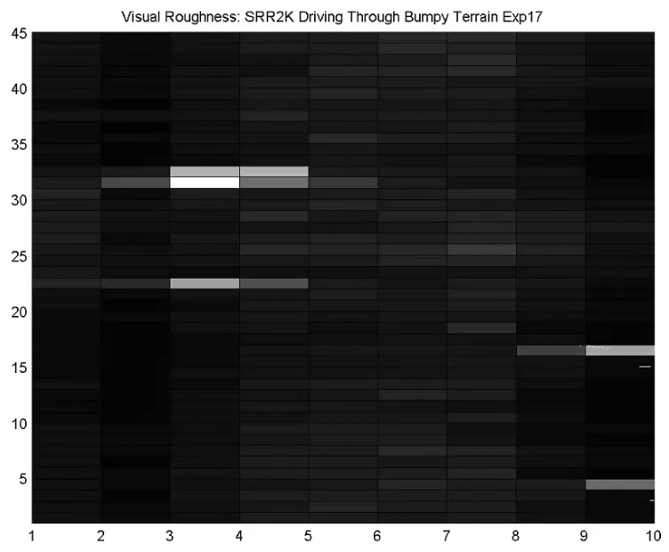
Hình 9 Chuỗi thời gian của độ gồ ghề thị giác được nhìn thấy bởi SRR2K khi nó đi qua một địa hình gồ ghề. Các tông màu tối tương ứng với bề mặt bằng phẳng, và màu trắng biểu thị địa hình gồ ghề. Các mô đất gồ ghề được nhìn thấy trong trường nhìn của robot ở bên phải tại các bước thời gian 4 và 16, và ở bên trái tại các bước 22 và 31–32. Tổng cộng có 45 bước xuất hiện tuần tự từ dưới lên trên trong Hình 9, nhưng quỹ đạo không thẳng và robot đã thực hiện nhiều lần rẽ trái và rẽ phải khi đi qua địa hình gồ ghề.
Các thành phần dao động của con quay hồi chuyển DMU (giá trị căn bậc hai trung bình bình phương, RMS) được hiển thị trong Hình 10, bảng trên. Người ta có thể thấy rằng DMU RMS có một số đỉnh gây ra do đi qua các khu vực gồ ghề có đá. Kết luận này được xác nhận bởi các bản ghi của gia tốc kế, cho thấy các đỉnh dao động tương tự tại cùng các vị trí; xem Hình 10, bảng dưới.
Để phát triển một mô hình điều khiển hiệu quả, SRR2K phải có khả năng tránh chướng ngại vật nếu nó nhìn thấy chúng thay vì cố gắng trèo qua chúng ngay cả khi điều đó có nghĩa là không đi theo con đường trực tiếp hướng tới mục tiêu. Một khi robot ở trên các mô đất gồ ghề, nó sẽ trải qua các dao động cao và giá trị RMS cao của DMU. Nó cần tránh tình huống này, do đó dao động RMS được sử dụng làm tín hiệu học tập củng cố âm. Mặt khác, việc di chuyển về phía vị trí mục tiêu là điều mong muốn và tạo ra tín hiệu học tập củng cố dương. Bản chất của nhiệm vụ là dự đoán trước dao động gồ ghề không mong muốn vài bước dựa trên tín hiệu thị giác. SRR2K cần tự phát triển sự liên kết này. Một cách tiếp cận AI thông thường sẽ cung cấp một số cơ sở quy tắc sử dụng tín hiệu thị giác; ví dụ, rẽ trái nếu bạn thấy một mô đất ở
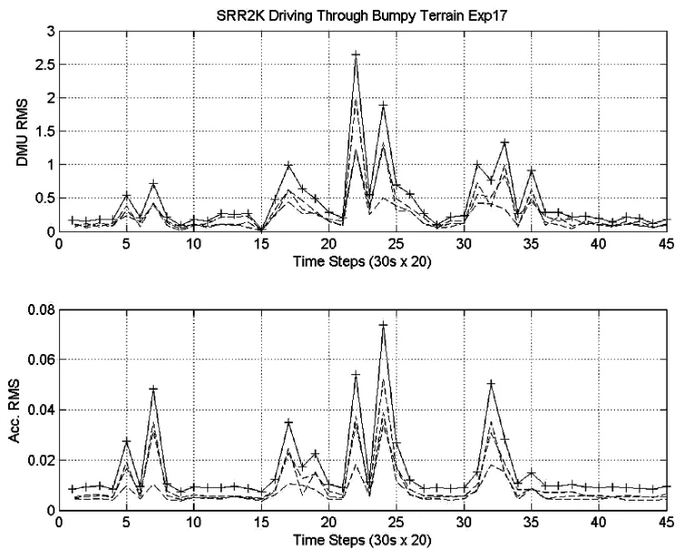
Hình 10 Các thành phần dao động của các bản ghi DMU (bảng trên); đường nét liền, nét đứt và nét chấm biểu thị 3 thành phần không gian khi SRR2K đi qua địa hình trong 45 bước. Các thành phần dao động của gia tốc kế (bảng dưới); các ký hiệu giống như trên bên phải. Đây có thể là một chiến lược thành công trên các nhiệm vụ tương đối đơn giản, nhưng rõ ràng không có cách nào để phát triển một cơ sở quy tắc có thể đưa ra chỉ dẫn trong một cuộc vượt địa hình tổng quát với những thách thức môi trường bất ngờ.
SRR2K đã chứng minh rằng nó thực sự có thể học được sự liên kết giữa các phương thức cảm giác khác nhau, và nó đi qua thành công một địa hình có chướng ngại vật mà không đâm vào chúng và đạt tới vị trí mục tiêu đích [80]. Điều đáng nói là điều khiển dựa trên KIV có tùy chọn không chỉ lấy các giá trị cảm giác tức thời, mà còn cả dữ liệu quan sát được vài bước trước đó. Điều này liên quan đến một bộ nhớ ngắn hạn (STM) với độ sâu bộ nhớ nhất định. Trong nhiệm vụ đã cho, một bộ nhớ có thể sâu 3–4 bước, hoặc hơn. Người ta thực tế có thể tối ưu hóa việc học và hiệu suất hệ thống dựa trên độ sâu bộ nhớ [78]. Điều này chưa được sử dụng trong các thí nghiệm SRR2K và được lên kế hoạch hoàn thành trong tương lai.
Ở bước tiếp theo của các thí nghiệm, camera gắn trên đỉnh (Viewcam) có thể được sử dụng để hỗ trợ hình thành bản đồ nhận thức. Các bản đồ nhận thức được tạo ra theo cách tự tổ chức thay vì học có giám sát. Cách tiếp cận này khác với các kỹ thuật tạo bản đồ nhận thức hiện có [10]. Chúng tôi không áp đặt các quy tắc từ bên ngoài mà muốn hệ thống phát triển một hành vi để hiện thân một số quy tắc có ý nghĩa. Các bản đồ được phát triển có thể được sử dụng để tạo ra các quy tắc hoặc cập nhật/sửa đổi các quy tắc hiện có khi cần thiết.
7 Triển vọng về Động lực học Có chủ đích
Một phương pháp tính toán dựa trên mẫu lấy cảm hứng sinh học đã được phác thảo, đại diện cho một sự rời bỏ quyết liệt khỏi các thiết kế máy tính kỹ thuật số ngày nay, vốn dựa trên tính toán với các con số được biểu diễn bằng các chuỗi chữ số. Bộ não không hoạt động với các con số kỹ thuật số, thay vào đó chúng hoạt động bằng cách sử dụng một chuỗi các mẫu hoạt động điều biến biên độ (AM), được quan sát thấy trong các phép đo EEG, MEG và fMRI. Sử dụng các nguyên lý động lực học thần kinh, chúng ta có thể thay thế tính toán dựa trên ký hiệu truyền thống bằng xử lý dựa trên mẫu. Trong cách tiếp cận của chúng tôi, các hạng mục không được định nghĩa “tiên nghiệm”. Thay vào đó, chúng nổi lên thông qua hoạt động tự tổ chức của các quần thể thần kinh tương tác trong không gian và thời gian. Chúng nổi lên và tan biến với tốc độ vài chu kỳ mỗi giây, theo sự chi phối của nhịp theta nền quan sát được trong não. Trong những năm qua, tính khả thi của cách tiếp cận này đã được chứng minh trong nhiều bài toán thực tiễn về phân loại, nhận dạng mẫu và ra quyết định.
Ở đây chúng tôi phát triển một lý thuyết động lực học phi tuyến về bộ não để có thể triển khai trong các thiết kế nhân tạo. Nguyên lý nền tảng được thúc đẩy bởi các phát hiện sinh lý thần kinh về tính toán dựa trên mẫu trong não thông qua chuỗi các chuyển pha vỏ não. Có bằng chứng đáng kể chỉ ra rằng các chuyển pha vỏ não là biểu hiện của các nhận thức cấp cao và có khả năng là của ý thức, tạo ra sự chuyển đổi giữa các mẫu AM siêu ổn định. KIV mô hình hóa các chuyển pha nhận thức như được quan sát trong não.
Các hệ thống động lực có chủ đích được giới thiệu dưới dạng mô hình KIV. KIV có tiềm năng tạo ra các chuyển pha vĩ mô, cung cấp cơ chế xử lý thông tin nhanh chóng và bền vững trong KIV, theo phong cách của bộ não. KIV là một mô hình não bộ nhận thức dựa trên sinh học có khả năng học hỏi và phản ứng với các đầu vào môi trường dựa trên kinh nghiệm của nó một cách bền vững và sáng tạo. Mô hình não bộ động lực học có chủ đích dựa trên KIV giải quyết bài toán nền tảng ký hiệu (symbol grounding problem) cổ điển bằng cách liên kết hành vi có chủ đích với động lực học thần kinh trung mô đã biết. Động lực học trung mô là thuộc tính then chốt của mô hình của chúng tôi giúp bắc cầu qua khoảng trống trong hiểu biết của chúng ta về mối liên kết tâm trí-cơ thể.
KIV mô tả chu trình hành động-tri giác nhận thức ở cốt lõi của tính có chủ đích, bao gồm dự đoán, lập kế hoạch hành động, thực thi, cảm nhận kết quả của hành động, đánh giá dự đoán, cập nhật dự đoán mới. Chu trình nhận thức trong mô hình động lực học diễn ra theo thời gian thực với tốc độ khung hình tương ứng với các dải quan sát được ở người. KIV đã được triển khai bằng các bệ thử nghiệm điều khiển robot trong mô phỏng tính toán và môi trường thực tế. Các thí nghiệm đã được tiến hành để tạo ra hành vi có chủ đích dẫn đến học tập, hình thành hạng mục và ra quyết định dựa trên tri thức đã học trong các kịch bản trước đó. Triển vọng phát triển trong tương lai của các hệ thống có chủ đích cũng đã được phác thảo.
Lời cảm ơn Nghiên cứu được trình bày trong công trình này đã được hoàn thành trong thời gian tác giả làm việc tại Phòng thí nghiệm Sức đẩy Phản lực (JPL) của NASA, Pasadena, CA; và tại Phòng thí nghiệm Nghiên cứu Không quân Hoa Kỳ (AFRL), Hanscom AFB, MA. Sự hỗ trợ tài chính từ các nguồn sau đây được đánh giá rất cao: Văn phòng Khái niệm Tiên tiến JPL, bởi Neville Marzwell; Viện Hàn lâm Quốc gia, Văn phòng Học bổng Nghiên cứu Cao cấp của Hội đồng Nghiên cứu Quốc gia. Tác giả xin gửi lời cảm ơn tới Tiến sĩ Walter J Freeman, UC
Berkeley vì sự hỗ trợ liên tục của ông. Tác giả cũng xin cảm ơn Terry Hunstberger, Hrand Aghazarian, Eddie Tunstel, và tất cả các thành viên của JPL Planetary Robotics; và tới Tiến sĩ Leonid Perlovsky, AFRL và Đại học Harvard.
Tài liệu tham khảo
1. Turing A. M. Computing machinery and intelligence. Mind, 59:433–460, 1950. 2. J. V. Neumann. The computer and the brain. New Haven, CT, Yale Univ. Press, 1958. 3. A. Newell and H. A. Simon. Human problem solving. Englewood Cliffs, NJ: Prentice-Hall, 1972. 4. Newell A. Physical symbol systems. Cognitive Science, 4:135–183, 1980. 5. A. Newell. Unified theories of cognition. Cambridge, MA: Harvard University Press, 1990. 6. Harter D. and Kozma R. Aperiodic dynamics and the self-organization of cognitive maps in autonomous agents. Int. J. of Intelligent Systems, 21:955–971, 2006. 7. Laird J. E., Newell A., and Rosenbloom P. S. Soar: An architecture for general intelligence. Artificial Intelligence, 33:1–64, 1987. 8. Anderson J. A., Silverstein J. W., Ritz, S. A. Jones, and R. S. Distinctive features, categorical perception, and probability learning: Some applications of a neural model. Psychological Review, 84:413–451, 1977. 9. H. L. Dreyfus. What Computers Still Can’t Do - A Critique of Artificial Reason. Cambridge, MA, MIT Press, 1992. 10. Mataric M. J. and Brooks R. A. Cambrian Intelligence, chapter Learning a distributed map representation based on navigation behaviors, pages 37–58. Cambridge, MA: The MIT Press, 1999. 11. A. Clark. Mindware: An Introduction to the Philosophy of Cognitive Science. Oxford University Press, 2001. 12. L. I. Perlovsky. Neural Networks and Intellect. Oxford Univ. Press, New York, NY, 2001. 13. D. E. Rumelhart and J. L. McClelland. Parallel distributed processing: Explorations in the microstructure of cognition. Cambridge, MA, MIT Press, 1986. 14. C. Bishop. Neural networks for pattern recognition. Oxford University Press, 1995. 15. Haykin S. Neural networks - A comprehensive foundation. Prentice Hall, NJ, 1998. 16. Towell G. G. and Shavlik J. W. Knowledge-based artificial neural networks. Artificial Intelligence, 70:119–165, 1994. 17. Sporns O., Almassy N., and Edelman G. M. Plasticity in value systems and its role in adaptive behavior. Adaptive Behavior, 7(3-4), 1999. 18. G. M. Edelman and G. Tononi. A Universe of Consciousness: How Matter Becomes Imagination. Basic Books, New York, N.Y., 2000. 19. Vershure P.M., Krose B., and Pfeifer R. Distributed adaptive control: The self-organization of behavior. Robotics and Autonomous Systems, 9:181–196, 1992. 20. R. Pfeifer and C. Scheier. Understanding Intelligence. Cambridge, MA, MIT Press, 1999. 21. Vershure P.M. and Althaus P. A real-world rational agent: Unifying old and new ai. Cognitive Science, 27(4):561–590, 2003. 22. W. J. Freeman. Mass Action in the Nervous System. Academic Press, New York, 1975. 23. Kozma. R. Freeman. W.J. Chaotic resonance - methods and applications for robust classification of noisy and variable patterns. Int. J. Bifurcation and Chaos, 11:1607–1629, 2001. 24. Katchalsky A., Rowland V., and Huberman B. Dynamic patterns of brain cell assemblies. Neuroscience Res.Program Bull., 12, 1974. 25. H. Haken. Synergetics: An Introduction. Berlin: Springer-Verlag, 1983. 26. J. A. S. Kelso. Dynamic patterns: The self-organization of brain and behavior. Cambridge, MA, MIT Press, 1995. 27. J.A.S. Kelso and D. A. Engstrom. The complementary nature. Cambridge, MA, MIT Press, 2006.
28. Freeman W.J., Burke B.C., and Holmes M.D. Aperiodic phase re-setting in scalp eeg of betagamma oscillations by state transitions at alpha-theta rates. Hum. Brain Mapp., 19:248–272, 2003. 29. Freeman W.J. Origin, structure, and role of background eeg activity. part 3. neural frame classification. Clin. Neurophysiology, 116:1118–1129, 2005. 30. Changeux J-P. and Dehaene S. Neuronal models of cognitive functions. Cognition, 33: 63–109, 1989. 31. Tsuda I. Toward an interpretation of dynamic neural activity in terms of chaotic dynamical systems. Beh. and Brain Sci., 24(5):793–810, 2001. 32. Lehmann D, Strik WK, Henggeler B, Koenig T, and Koukkou M. Brain electric microstates and momentary conscious mind states as building blocks of spontaneous thinking: I. visual imagery and abstract thoughts. Int. J Psychophysiol., 29:1–11, 1998. 33. Fingelkurts A .A. and Fingelkurts A. A. Operational architectonics of the human brain biopotential field: Towards solving the mind-brain problem. Mind and Brain, 2:262–296, 2001. 34. Fingelkurts A .A. and Fingelkurts A. A. Making complexity simpler: multivariability and metastability in the brain. Internat J.Neurosci, 114:843–862, 2004. 35. Barrie J.M., Freeman W.J., and Lenhart M. Modulation by discriminative training of spatial patterns of gamma eeg amplitude and phase in neocortex of rabbits. J. Neurophysiol., 76: 520–539, 1996. 36. Ohl FW Scheich H and Freeman WJ. Change in pattern of ongoing cortical activity with auditory category learning. Nature, 412:733–736, 2001. 37. Ohl FW, Deliano M, Scheich H, and Freeman WJ. Early and late patterns of stimulus-related activity in auditory cortex of trained animals. Biol. Cybernetics, 88:374–379, 2003. 38. Bressler S.L. Cortical coordination dynamics and the disorganization syndrome in schizophrenia. Neuropsychopharmacology, 28:S35–S39, 2003. 39. Bressler S.L. and Kelso J.A.S. Cortical coordination dynamics and cognition. Trends in Cognitive Sciences, 5:26–36, 2001. 40. Le Van Quyen M, Foucher J, Lachaux J-P, Rodriguez E, Lutz A, Martinerie J, and Varela F. Comparison of hilbert transform and wavelet methods for the analysis of neuronal synchrony. J. Neurosci. Meth., 111:83–98, 2001. 41. Werner G. Perspectives on the neuroscience of cognition and consciousness. BioSystems, 2006. 42. B. J. Baars. A cognitive theory of consciousness. Cambridge Univ. Press, MA, 1988. 43. Freeman W.J. Origin, structure, and role of background eeg activity. part 2. analytic amplitude. Clin. Neurophysiology, 115:2077–2088, 2004. 44. I. Prigogine. From Being to Becoming: Time and Complexity in the Physical Sciences. WH Freeman, San Francisco, 1980. 45. Lachaux J-P, Rodriquez E, Martinerie J, and Varela FA. Measuring phase synchrony in brain signals. Hum. Brain Mapp., 8:194–208, 1999. 46. Quiroga RQ Kraskov A Kreuz T Grassberger P. Performance of different synchronization measures in real data: A case study on electroencephalographic signals. Physical Rev E, 6504(U645-U6 58):art. no. 041903, 2002. 47. Demirer R.M., Kozma R., Caglar M., and Polatoglu Y. Hilbert transform optimization to detect cortical phase transitions in beta-gamma band. (Submitted), 2006. 48. S. Kauffman. The Origins of Order - Self-Organization and Selection in Evolution. Oxford Univ. Press, 1993. 49. Crutchfield J.P. The calculi of emergence: Computation, dynamics, and induction. Physica D, 75:11–54, 1994. 50. Watts D.J. Strogatz S.H. Collective dynamics of “small-world” networks. Nature, 393:440– 442, 1998. 51. Bressler S.L. Understanding cognition through large-scale cortical networks. Current Directions in Psychological Science, 11:58–61, 2002. 52. D. Watts. Six Degrees: The Science of a Connected Age. New York: Norton, 2003. 53. Wang XF and Chen GR. Complex networks: small-world, scale-free and beyond. IEEE Trans. Circuits Syst., 31:6–20, 2003.
54. Albert R. and Barabási A.L. Statistical mechanics of complex networks. Reviews of Modern Physics, 74:47, 2002. 55. Barabási A.L. and E. Bonabeau. Scale-free networks. Scientific American, 288:60–69, 2003. 56. Bollobas B. and Riordan O. Handbook of graphs and networks, chapter Results on scale-free random graphs, pages 1–34. Wiley-VCH, Weinheim, 2003. 57. Ingber L. Neocortical Dynamics and Human EEG Rhythms, chapter Statistical mechanics of multiple scales of neocortical interactions, pages 628–681. New York: Oxford U.P., 1995. 58. Hoppensteadt F.C. and Izhkevich E.M. Thalamo-cortical interactions modeled by weakly connected oscillators: could the brain use fm radio principles? BioSystems, 48:85–94, 1998. 59. Friston K.J. The labile brain. i. neuronal transients and nonlinear coupling. Phil Trans R Soc Lond B, 355:215–236, 2000. 60. Linkenkaer-Hansen K, Nikouline VM, Palva JM, and Iimoniemi R.J. Long-range temporal correlations and scaling behavior in human brain oscillations. J. Neurosci., 15:1370– 1377, 2001. 61. K. Kaneko and I. Tsuda. Complex Systems: Chaos and Beyond. A Constructive Approach with Applications in Life Sciences. Springer Verlag, 2001. 62. Kozma R., Freeman W.J., and Erdi P. The kiv model - nonlinear spatio-temporal dynamics of the primordial vertebrate forebrain. Neurocomputing, 52-54:819–825, 2003. 63. Stam CJ, Breakspear M, van Cappellen van Walsum A.M, and van Dijk BW. Nonlinear synchronization in eeg and whole-head recordings of healthy subjects. Hum Brain Mapp, 19:63–78, 2003. 64. Kozma R., Puljic M., Bollobas B., Balister P., and Freeman W.J. Phase transitions in the neuropercolation model of neural populations with mixed local and non-local interactions. Biol. Cybernetics, 92:367–379, 2005. 65. Balister P., Bollobas B., and Kozma R. Large deviations for mean field models of probabilistic cellular automata. Random Structures and Algorithms, 29:399–415, 2006. 66. Bak P., Tang C., and Wiesenfeld K. Phys. Rev. Lett., 59:381, 1987. 67. P. Bak. How Nature Works - The Science of Self-Organized Criticality. Springer Verlag, N.Y., 1996. 68. H. J. Jensen. Self-organized criticality - Emergent behavior in physical and biological systems. Cambridge University Press, 1998. 69. Chang H.J. and Freeman W.J. Parameter optimization in models of the olfactory neural system. Neural Networks, 9:1–14, 1996. 70. Freeman W.J., Chang H.J., Burke B.C., Rose P.A., and Badler J. Taming chaos: stabilization of aperiodic attractors by noise. IEEE Trans. Circ. and Syst. I., 44:989–996, 1997. 71. Xu D. and Principe J. Dynamical analysis of neural oscillators in an olfactory cortex model. IEEE Trans. Neur. Netw., 15:1053–1062, 2004. 72. Ilin R. and Kozma R. Stability of coupled excitatory-inhibitory neural populations and application to control of multi-stable systems. Physics Lett A, 360(1):66–83, 2006. 73. Gutierrez-Galvez A. and Gutierrez-Osuna R. Contrast enhancement of sensor-array patterns through hebbian/antihebbian learning. Proc. 11th Int. Symp. Olfaction and Elect. Nose, Barcelona, Spain, 2005. 74. Chang H.J., Freeman W.J., and Burke B.C. Optimization of olfactory model in software to give 1/f power spectra reveals numerical instabilities in solutions governed by aperiodic (chaotic) attractors. Neural Networks, 11:449–466, 1998. 75. Freeman W.J., Kozma R., and Werbos P.J. Biocomplexity - adaptive behavior in complex stochastic dynamical systems. BioSystems, 59(2):109–123, 2001. 76. Beliaev I. and Kozma R. Time series prediction using chaotic neural networks on the cats benchmark test. Neurocomputing (in press), 2007. 77. Harter D. and Kozma R. Chaotic neurodynamics for autonomous agents. IEEE Trans. Neural Networks, 16(4):565–579, 2005. 78. Kozma R. and Muthu S. Implementing reinforcement learning in the chaotic kiv model using mobile robot aibo. IEEE/RSJ Int. Conf. on Intelligent Robots and Systems IROS’04, Sendai, Japan, 2004.
79. Kozma R., Wong D., Demirer M., and Freeman W.J. Learrning intentional behavior in the k-model of the amygdala and enthorhinal cortex with the cortico-hippocampal formation. Neurocomputing, 65-66:23–30, 2005. 80. Huntsberger T., Tunstel E., and Kozma R. Intelligence for Space Robotics, chapter Onboard learning strategies for planetary surface rovers, pages 403–422. TCI Press, San Antonio, TX, 2006. 81. W. J. Freeman. Neurodynamics: An Exploration of Mesoscopic Brain Dynamics. London, U.K., Springer-Verlag, 2000. 82. Kozma R. and Freeman W.J. Basic principles of the kiv model and its application to the navigation problem. J. Integrative Neurosci., 2:125–140, 2003. 83. Nunez R.E. and Freeman W.J. Restoring to cognition the forgotten primacy of action, intention, and emotion. J. Consciousness Studies, 6(11-12):ix–xx, 1999. 84. Harter D. and Kozma R. Navigation and cognitive map formation using aperiodic neurodynamics. Proc. of 8th Int. Conf. on Simulation of Adaptive Behavior (SAB’04), LA, CA., 8:450–455, 2004. 85. Kozma R. and Fukuda T. Intentional dynamic systems - fundamental concepts and applications (editorial). Int. J. Intell. Syst., 21(9):875–879, 2006. 86. Voicu H., Kozma R., Wong D., and Freeman W.J. Spatial navigation model based on chaotic attractor networks. Connect. Sci., 16(1):1–19, 2004. 87. Kozma R. and Myers M. Analysis of phase transitions in kiv with amygdale during simulated navigation control. IEEE Inf. Joint Conf. Neur. Netw. IJCNN05, Montreal, Canada, 2005. 88. Kozma R., R. Deming, and L. Perlovsky. Optimal estimation of parameters of transient mixture processes using dynamic logic approach. Conference on Knowledge-Intensive Multi-Agent Systems KIMAS’07, Boston, MA, 2007. 89. Gat E., Desai R., Ivlev R., Loch J., and Miller D.P. Behavior control for robotic exploration of planetary surfaces. IEEE Trans. Robotics and Autom., 10(4):490–503, 1994. 90. Huntsberger T.L. and Rose J. Bismarc- a biologically inspired system for map-based autonmous rover control. Neural Networks, 11(7-8):1497–1510, 1998. 91. Huntsberger T., Cheng Y., Baumgartner E. T., Robinson M., and Schenker P. S. Sensory fusion for planetary surface robotic navigation, rendezvous, and manipulation operations. Proc. Int. Conf. on Advanced Robotics, Lisbon, Portugal, pages 1417–1424, 2003. 92. Tunstel E. Ethology as an inspiration for adaptive behavior synthesis in autonomous planetary rovers. Autonomous Robots, 11:333–339, 2001. 93. Seraji H. and Howard A. Behavior-based robot navigation on challenging terrain: A fuzzy logic approach. IEEE Trans. Robotics and Autom., 18(3):308–321, 2002. 94. O’Keefe J and Recce M.L. Phase relationship between hippocampal place units and the eeg theta rhythm. Hippocampus, 3:317–330, 1993. 95. Blum K. I. and Abbott L. F. A model of spatial map formation in the hippocampus of the rat. Neural Computation, 8:85–93, 1996. 96. Touretzky D. S. and Redish A. D. Theory of rodent navigation based on interacting representations of space. Hippocampus, 6(3):247–270, 1996. 97. Bachelder I.A. and Waxman A.M. Mobile robot visual mapping and localization: A view based neurocomputational architecture that emulates hippocampal place learning. Neural Networks, 7:1083–1099, 1994. 98. Arleo A. and W. Gerstner. Spatial cognition and neuro-mimetic navigation: A model of hippocampal place cell activity. Biological Cybernetics, 83:287–299, 2000. 99. Hasselmo M.E., Hay J., Ilyn M., and Gorchetchnikov A. Neuromodulation, theta rhythm and rat spatial navigation. Neural Networks, 15:689–707, 2002. 100. Berthoz A. Trullier O. Wiener S. and Meyer J.-A. Biologically-based artificial navigation systems: Review and prospects. Progress in Neurobiology, 51:483–544, 1997.
Làm thế nào Bộ não Tạo ra, Thay đổi và Ghi đè Có chọn lọc các Quy tắc Ứng xử của mình?
Daniel S. Levine
Tóm tắt Làm thế nào chúng ta biết nói chuyện cởi mở với bạn bè nhưng lại dè dặt với người lạ? Làm thế nào chúng ta di chuyển giữa nơi làm việc, câu lạc bộ và nơi thờ tự mà điều chỉnh hành vi của mình cho phù hợp với từng bối cảnh? Làm thế nào chúng ta phát triển các quy tắc phụ thuộc ngữ cảnh về những gì chúng ta có thể ăn? Chúng ta giải quyết những vấn đề như vậy một cách dễ dàng, nhưng còn rất lâu nữa mới thiết kế được các hệ thống thông minh có thể làm được điều đó. Tuy nhiên, chúng ta đã biết đủ về các chức năng nhận thức và hành vi của ba vùng vỏ não trước trán, cùng các kết nối dưới vỏ của chúng, để đề xuất một lý thuyết thần kinh về sự hình thành và học tập quy tắc phụ thuộc ngữ cảnh. Các quy tắc mà một cá nhân tuân theo có thể thay đổi, hoặc do sự phát triển cá nhân hoặc do sự thay đổi về căng thẳng. Điều này có thể được giải thích một phần bởi sự tương tác qua lại giữa các tín hiệu từ hồi hải mã, biểu thị mức độ liên quan đến nhiệm vụ, và hạch hạnh nhân, biểu thị mức độ nổi bật về mặt cảm xúc. Cả hai tập hợp tín hiệu này đều ảnh hưởng đến cổng hạch nền vốn giải ức chế có chọn lọc các hành vi để đáp ứng với ngữ cảnh.
1 Giới thiệu
Một hệ thống nhận thức bậc cao phức tạp rõ ràng cần phát triển các tiêu chí cho biết những hành động nào nên thực hiện và những hành động nào nên kiềm chế không thực hiện. Môi trường của hệ thống càng phức tạp, các tiêu chí đó càng cần phải linh hoạt và nhạy cảm với ngữ cảnh.
Thuật ngữ “quy tắc” gây ra một mức độ khó chịu nhất định trong cộng đồng mạng thần kinh. Đối với một số độc giả, nó mang hàm ý về các quy tắc logic IF-THEN nghiêm ngặt từ một hệ thống sản xuất như trong trí tuệ nhân tạo ký hiệu. Thực tế, Fodor và Pylyshyn [19] và các nhà khoa học nhận thức ký hiệu khác đôi khi đã lập luận rằng các mạng thần kinh chủ nghĩa kết nối vốn không phù hợp để mô phỏng khả năng tạo quy tắc ký hiệu của con người.
Tuy nhiên, tôi dùng từ “quy tắc” không nhất thiết theo nghĩa nghiêm ngặt này, mặc dù rõ ràng các mạng thần kinh trong não chúng ta có khả năng thực hiện các phép toán logic hình thức. Tôi chỉ đơn giản muốn nói đến các nguyên tắc, thường là những nguyên tắc có thể mô tả một cách có ý thức, để tổ chức hành vi và ứng xử của một người qua một loạt các tình huống. Thông thường, đây là những phương pháp phỏng đoán (heuristics) hoặc quy tắc ngón tay cái; tức là những điều “nên làm” và “không nên làm” không mang tính tuyệt đối mà có xu hướng áp dụng, theo thuật ngữ của các nhà triết học, là ceteris paribus (mọi thứ khác đều bình đẳng).
Các phương pháp phỏng đoán mà con người chúng ta sử dụng bắt nguồn từ đâu? Một trong những câu trả lời quen thuộc là: tiến hóa. Nghĩa là, câu trả lời là các phương pháp phỏng đoán của chúng ta dựa trên các mẫu hành vi đã được chọn lọc để sinh tồn và thành công sinh sản. Ngoài ra, các nhà tâm lý học tiến hóa có xu hướng tin rằng mặc dù có một số khác biệt giữa các loài về chi tiết, những điều cơ bản của các mẫu hành vi này phần lớn được chia sẻ với các loài động vật có vú khác. Tuy nhiên, với tư cách là lời giải thích cho chức năng nhận thức bậc cao, các lập luận tiến hóa tiêu chuẩn cung cấp điểm khởi đầu nhưng chưa đầy đủ, như tôi hy vọng sẽ chứng minh trong chương này.
Có một số mẫu hành vi bắt nguồn từ tiến hóa và hiện diện ở tất cả chúng ta, chẳng hạn như các mẫu hành vi vị kỷ (hoặc tự bảo vệ) và các mẫu hành vi gắn kết xã hội (bao gồm cả hành vi vị tha). Tuy nhiên, tất cả chúng ta đều khác nhau về các tiêu chí để quyết định khi nào thì tham gia vào mẫu hành vi nào, và trong các bối cảnh xã hội và môi trường nào. Hơn nữa, các tiêu chí quyết định này không chỉ mang tính di truyền mà còn chịu ảnh hưởng nặng nề bởi việc học tập và văn hóa [18, 39].
Đúng vậy, nhà tiến hóa luận cứng rắn sẽ lập luận, nhưng tất cả những điều này đều phụ thuộc vào tính dẻo (plasticity) rộng lớn của bộ não chúng ta (hiện diện ở mọi loài động vật nhưng được mở rộng vượt bậc ở con người), và tiến hóa đã chọn lọc chúng ta vì đặc tính dẻo này. Điều này chắc chắn đúng, nhưng điều đó không kéo theo thuyết tất định tiến hóa cho từng hành vi phát sinh từ tính dẻo đó.
Hơn nữa, sự sinh tồn và sinh sản không giải thích được tất cả các hành vi. Ngoài ra, con người còn tìm kiếm hạnh phúc toàn diện (well-being): sự tự hiện thực hóa bản thân, sự kích thích thú vị, sự hài hòa thẩm mỹ, sự làm chủ và ý nghĩa đều có thể là những động lực mạnh mẽ (xem, ví dụ, [14, 18, 42, 51]). Trong khi sự thích nghi tiến hóa có thể cung cấp những giải thích chức năng hợp lý cho hầu hết các động lực này, các hành vi mà chúng tạo ra có đời sống riêng tách biệt khỏi giá trị sinh tồn hoặc sinh sản của chúng.
Bây giờ chúng ta tìm cách phân tách các hệ thống não bộ tham gia vào việc phát triển các quy tắc ở nhiều mức độ phức tạp có thể có.
2 Các Vùng Não Then chốt cho sự Phát triển Quy tắc
2.1 Vùng dưới đồi, Não giữa và Thân não
Các nhu cầu sinh lý cơ bản của sinh vật được biểu diễn trong các cấu trúc dưới vỏ sâu được chia sẻ với các loài động vật khác và có mối liên hệ chặt chẽ với hệ thống nội tạng và nội tiết. Các vùng này bao gồm một số nhân của vùng dưới đồi và thân não.
Phần này của bộ não không có cấu trúc gọn gàng dễ dàng cho việc mô hình hóa; do đó, những vùng này phần lớn bị các nhà mô hình hóa gần đây bỏ qua bất chấp tầm quan trọng chức năng của chúng đối với động vật, bao gồm cả con người. Tuy nhiên, các vùng dưới vỏ sâu này đã đóng vai trò then chốt trong một số mạng thần kinh dựa trên sinh lý học sớm nhất (được phát triển vào thập niên 1960 và 1970).
Kilmer, McCulloch và Blum [30] trong mô hình mô phỏng máy tính có lẽ là đầu tiên về một vùng não, đã đặt các phương thức hành vi tổng quát của sinh vật (ví dụ: ăn, uống, tình dục, khám phá, v.v.) vào cấu trúc lưới của não giữa và thân não. Cấu trúc lưới được chọn vì nó cần thiết cho sự tỉnh táo, có khả năng tạo ra các hành vi thiết yếu (mặc dù không do kích thích thúc đẩy) khi vắng mặt vỏ não, và được tổ chức về mặt giải phẫu thành các tiểu vùng bán tự trị được ví như một chồng phỉnh poker. Mô hình S-RETIC của [30] được chia thành các mô-đun tương tự như những chồng phỉnh poker này; các phương thức hành vi cạnh tranh trong mỗi mô-đun cho đến khi cùng một phương thức thắng cuộc cạnh tranh ở hơn một nửa số mô-đun. Một ý tưởng tương tự xuất hiện trong lý thuyết mạng chú ý có chọn lọc của Grossberg [23], người đã đặt cái mà ông gọi là hệ thống dị cấp động lực-cảm giác (sensory-drive heterarchy) ở vùng dưới đồi. Các động lực khác nhau trong hệ thống dị cấp cạnh tranh để được kích hoạt, chịu ảnh hưởng bởi cả các kết nối với nội tạng (tạo lợi thế trong cuộc cạnh tranh cho những động lực cần được thỏa mãn nhất) và với vỏ não (tạo lợi thế cho những động lực có sẵn các tín hiệu cảm giác liên quan).
Ý tưởng về một mạng lưới cạnh tranh-hợp tác của các động lực hoặc nhu cầu này vẫn chưa được kiểm chứng nhưng dường như có ích về mặt chức năng cho việc mô hình hóa hành vi và nhận thức. Việc lập quy tắc và học tập một phần dựa trên các tính toán liên quan đến những hành động nào có thể dẫn đến sự thỏa mãn của những nhu cầu sống sót sau cuộc cạnh tranh. Tuy nhiên, sự cạnh tranh giữa các nhu cầu không nhất thiết là kẻ thắng lấy hết, và những quyết định tốt nhất trong các tình huống phức tạp là những quyết định tiến một phần hướng tới việc đáp ứng một số lượng lớn hơn các nhu cầu.
Nhưng chúng ta hiểu “nhu cầu” là gì? Có bằng chứng hành vi đáng kể cho thấy từ này nên được mở rộng ra ngoài những nhu cầu thuần túy sinh lý như đói, khát, tình dục và sự bảo vệ. Thuật ngữ này cũng nên bao gồm các nhu cầu về kết nối xã hội, kích thích thẩm mỹ và trí tuệ, lòng tự trọng và sự tự hoàn thiện bản thân, chẳng hạn.
Ý tưởng về các động lực và mục đích sinh học vượt ra ngoài những thứ thúc đẩy sự sinh tồn và sinh sản có từ ít nhất là khái niệm tháp nhu cầu của nhà tâm lý học Abraham Maslow, một khái niệm đã bị hiểu lầm rộng rãi. Từ “thứ bậc” (hierarchy) đã bị hiểu sai thành việc thỏa mãn các nhu cầu cấp thấp hơn phải đi trước một cách nghiêm ngặt bất kỳ nỗ lực nào nhằm đáp ứng các nhu cầu cấp cao hơn, một cách diễn giải mà Maslow đã phủ nhận rõ ràng ([42], tr. 26). Nhưng mô hình hóa mạng thần kinh, dựa trên các hệ thống động lực, cho phép một ý nghĩa linh hoạt hơn cho từ “thứ bậc” (hoặc, như McCulloch và Grossberg ưa dùng hơn, dị cấp - heterarchy). Nó là một thứ bậc theo nghĩa có một mạng lưới cạnh tranh-hợp tác với các thiên kiến (xem, ví dụ, [24]). Điều này có nghĩa là có xu hướng có trọng số lớn hơn hướng về các nhu cầu cấp thấp hơn nếu những nhu cầu đó chưa được đáp ứng, hoặc nếu có quá nhiều sự không chắc chắn về việc đáp ứng dự kiến của chúng (xem Hình 1 để biết sơ đồ). Tuy nhiên, thiên kiến hướng tới việc đáp ứng nhu cầu cấp thấp hơn là một dạng né tránh rủi ro, và có những khác biệt cá nhân đáng kể về tính cách trong việc né tránh rủi ro hoặc tìm kiếm rủi ro có thể làm giảm nhẹ hoặc làm trầm trọng thêm các thiên kiến thứ bậc.
Nhưng điều này vẫn để lại một số câu hỏi rộng mở cho nhà mô hình hóa thần kinh dựa trên sinh học hoặc nhà khoa học thần kinh. Chúng ta biết đôi chút (mặc dù kiến thức của chúng ta chưa mang tính dứt khoát) về các vị trí dưới vỏ sâu cho các nhu cầu định hướng sinh tồn và sinh sản. Nhưng liệu cũng có các vị trí dưới vỏ sâu cho các nhu cầu gắn kết, thẩm mỹ, tri thức hoặc lòng tự trọng không? Nếu có, có vẻ như những nhu cầu này được chia sẻ với hầu hết các loài động vật có vú khác. Các dữ liệu như của [8] gợi ý rằng câu trả lời có thể là có, ít nhất là đối với các nhu cầu gắn kết. Các nhà nghiên cứu này đã tìm thấy một vị trí vùng dưới đồi, ở một
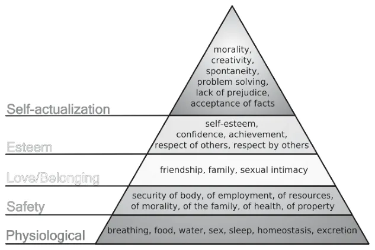
(a)
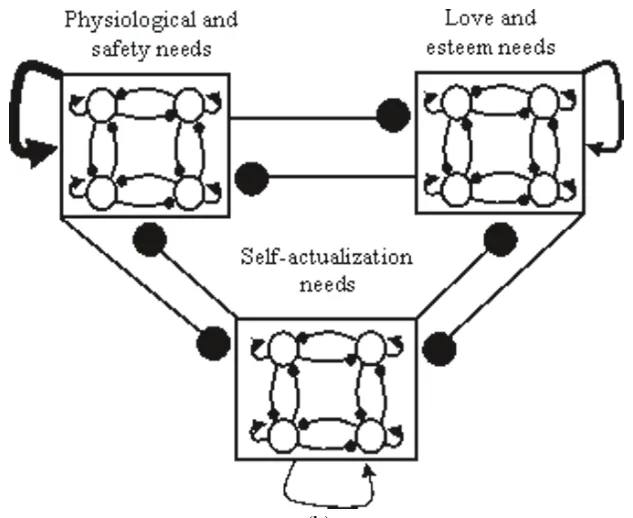
(b)
Hình 1 (a) Tháp nhu cầu của Maslow được biểu diễn dưới dạng kim tự tháp. (Từ Wikipedia với sự cho phép.) (b) Một bản thể hiện mạng thần kinh của tháp nhu cầu Maslow. Các mũi tên biểu thị sự kích thích, các vòng tròn đặc biểu thị sự ức chế. Tất cả các nhu cầu này đều tự kích thích chính mình và ức chế lẫn nhau. Nhưng thứ bậc bị thiên lệch về phía các nhu cầu sinh lý và an toàn vốn có sự tự kích thích mạnh nhất, được biểu thị bằng mũi tên tự kích thích đậm nhất; các nhu cầu yêu thương và được tôn trọng có mũi tên tự kích thích đậm tiếp theo, và nhu cầu tự hiện thực hóa có mũi tên nhạt nhất